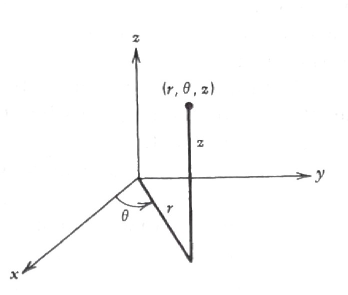

14 Elliptic Partial Differential Equations
15 Elliptic Partial Differential Equations
15.1 The Laplacian (an Intuitive Description)
The Laplacian operator
\[ \nabla^2 =\frac{\partial^2}{\partial x^2} +\frac{\partial^2}{\partial y^2} +\frac{\partial^2}{\partial z^2}\]
is probably the most important operator in mathematical physics. \(\,\)The question is, \(\,\)what does it mean and why should the sum of three second derivatives have anything to do with the laws of nature?
The answer to this lies in the fact that the Laplacian of a function allows us to compare the function at a point with the function at neighboring points. \(\,\)It does what the second derivative did in one dimension and might be thought of as a second derivative generalized to higher dimensions
\(~\)

\(~\)
The heat equation \(\,u_t=\alpha\nabla^2 u\,\) measures temperature \(\,u\), and the equation can be interpreted to mean that the change in temperature with respect to time \(\,u_t\) is proportional to \(\,\nabla^2 u\). \(\,\)That is, \(\,\)the temperature at a point is increasing if the temperature at that point is less than the average of the temperature on a circle around the point
The wave equation \(\,u_{tt}=c^2\nabla^2 u\,\) measures the displacement of a drumhead and can be interpreted to mean that the acceleration (or force) of a point on the drumhead \(\,u_{tt}\,\) is proportional to \(\,\nabla^2 u\). \(\,\)That is, \(\,\)the drumhead at a point is accelerating upward if the drumhead at that point is less than the average of its neighbors
Laplace’s equation \(\,\nabla^2 u = 0\,\) says that the solution \(\,u\,\) is always equal to the average of its neighbors. \(\,\)For example, \(\,\)a steady-state, stretched rubber membrane satisfies Laplace’s equation, \(\,\)hence, \(\,\)the height of the membrane at any point is equal to the average height of the membrane on a circle around the point
Poisson’s equation \(\,\nabla^2 u=f\), \(\,\)where \(\,f\,\) is a function that depends only on the space variables
- \(\nabla^2 u=-\rho\,\) describes the potential of an electrostatic field where \(\,\rho\,\) represents a constant charge density
- \(\nabla^2 u =-g(x,y)\,\) describes the steady-state temperature \(\,u(x,y)\,\) due to a heat source \(\,g(x,y)\)
\(\nabla^2 u +\lambda u =0\,\) is known as the Helmholtz equation which describes the fundamental shapes of a stretched membrane
\(~\)
Changing Coordinates
Before we start, \(\,\)however, \(\,\)let’s review briefly the three major coordinate systems in two or three dimensions except for Cartesian system:
Polar Coordinates
\[\begin{matrix} x = r\cos\theta \\ y = r\sin\theta \, \\ \end{matrix} \;\; \Rightarrow \;\; \begin{matrix} r^2 = x^2 + y^2 \;\;\;\\ \tan\theta = y/x \;\;\;\;\; \end{matrix}\]
As an illustration, \(\,\)we see how the two-dimensional Laplacian is transformed into polar coordinates:
\[\scriptsize \begin{aligned} \nabla^2u &= u_{xx} +u_{yy}\\ &\Updownarrow \\ u_x = u_r r_x +u_\theta \theta_x &= u_r \cos\theta -u_\theta \frac{\sin\theta}{r}\\ u_y = u_r r_y +u_\theta \theta_y &= u_r \sin\theta +u_\theta \frac{\cos\theta}{r}\\ &\Downarrow \\ u_{xx} = (u_x)_r r_x +(u_x)_\theta \theta_x =& {\tiny\left( u_{rr} \cos\theta -u_{\theta r} \frac{\sin\theta}{r} +u_\theta\frac{\sin\theta}{r^2} \right) \cos\theta -\left( u_{r\theta} \cos\theta -u_r\sin\theta -u_{\theta\theta} \frac{\sin\theta}{r} -u_\theta \frac{\cos\theta}{r} \right) \frac{\sin\theta}{r} }\\ u_{yy} = (u_y)_r r_y +(u_y)_\theta \theta_y =& {\tiny \left( u_{rr} \sin\theta +u_{\theta r} \frac{\cos\theta}{r} -u_\theta\frac{\cos\theta}{r^2} \right) \sin\theta +\left( u_{r\theta} \sin\theta +u_r\cos\theta +u_{\theta\theta} \frac{\cos\theta}{r} -u_\theta \frac{\sin\theta}{r} \right) \frac{\cos\theta}{r} } \\ &\Updownarrow \\ \color{red}{\nabla^2 u = u_{rr}} &\color{red}{+\frac{1}{r} u_r +\frac{1}{r^2} u_{\theta\theta}} \end{aligned}\]
Cylindrical Coordinates

\[\begin{matrix} x = r\cos \theta \\ y = r\sin \theta \, \\ z = z \quad\;\;\; \end{matrix} \;\; \Rightarrow \;\; \begin{matrix} r^2 = x^2 + y^2 \;\;\;\\ \tan\theta = y/x \quad\; \\ z=z \qquad\;\;\;\; \end{matrix}\]
Changing the Laplacian \(\,\nabla^2 u = u_{xx} +u_{yy} +u_{zz}\,\) to cylindrical coordinates, \(\,\)we can show
\[ \color{red}{\nabla^2 u = u_{rr} +\frac{1}{r} u_r +\frac{1}{r^2} u_{\theta\theta} +u_{zz}}\]
Spherical Coordinates

\[\begin{matrix} x = r\sin\phi\cos \theta \\ y = r\sin\phi\sin \theta \, \\ z = r\cos\phi \quad\;\;\; \end{matrix} \;\; \Rightarrow \;\; \begin{matrix} r^2 = x^2 + y^2 +z^2 \;\;\;\\ \cos\phi = z/r \qquad\;\;\;\;\\ \tan\theta=y/x \qquad\;\;\;\; \end{matrix}\]
Finally, \(\,\)if we write the Laplacian in spherical coordinates, \(\,\)we have
\[\scriptsize \begin{aligned} \nabla^2u &= u_{xx} +u_{yy} +u_{zz}\\ &\Updownarrow \\ u_x = u_r r_x +u_\phi \phi_x+u_\theta \theta_x &= u_r \sin\phi\cos\theta +u_\phi \frac{\cos\phi\cos\theta}{r} -u_\theta \frac{\sin\theta}{r\sin\phi}\\ u_y = u_r r_y +u_\phi \phi_y+u_\theta \theta_y &= u_r \sin\phi\sin\theta +u_\phi \frac{\cos\phi\sin\theta}{r} +u_\theta \frac{\cos\theta}{r \sin\phi}\\ u_z = u_r r_z +u_\phi \phi_z+u_\theta \theta_z &= u_r \cos\phi -u_\phi\frac{\sin\phi}{r} \\ &\Downarrow \\ u_{xx} = (u_x)_r r_x +(u_x)_\phi \phi_x+(u_x)_\theta \theta_x &= {\tiny \left( u_{rr} \sin\phi\cos\theta +u_{\phi r} \frac{\cos\phi\cos\theta}{r} -u_\phi\frac{\cos\phi\cos\theta}{r^2} -u_{\theta r} \frac{\sin\theta}{r\sin\phi} +u_\theta\frac{\sin\theta}{r^2\sin\phi} \right) \sin\phi\cos\theta} \\ { \tiny +\left( u_{r\phi}\sin\phi \cos\theta \right. }&{\tiny\, \left. +u_r\cos\phi\cos\theta +u_{\phi\phi} \frac{\cos\phi\cos\theta}{r} -u_{\phi} \frac{\sin\phi\cos\theta}{r} -u_{\theta\phi} \frac{\sin\theta}{r\sin\phi} +u_\theta \frac{\sin\theta\cot\phi}{r\sin\phi} \right)\frac{\cos\phi \cos\theta}{r}} \\ {\tiny -\left( u_{r\theta}\sin\phi\cos\theta \right. }&{\tiny \, \left. -u_r \sin\phi\sin\theta +u_{\phi\theta} \frac{\cos\phi\cos\theta}{r} -u_\phi \frac{\cos\phi\sin\theta}{r} -u_{\theta\theta}\frac{\sin\theta}{r\sin\phi} -u_\theta \frac{\cos\theta}{r\sin\phi} \right) \frac{\sin\theta}{r\sin\phi} }\qquad\qquad \end{aligned}\]
\[\scriptsize \begin{aligned} u_{yy} = (u_y)_r r_y +(u_y)_\phi \phi_y+(u_y)_\theta \theta_y &= {\tiny \left( u_{rr} \sin\phi\sin\theta +u_{\phi r} \frac{\cos\phi\sin\theta}{r} -u_\phi\frac{\cos\phi\sin\theta}{r^2} +u_{\theta r} \frac{\cos\theta}{r\sin\phi} -u_\theta\frac{\cos\theta}{r^2\sin\phi} \right) \sin\phi\sin\theta }\\ {\tiny+\left( u_{r\phi}\sin\phi \sin\theta \right.} &{\tiny\, \left. +u_r\cos\phi\sin\theta +u_{\phi\phi} \frac{\cos\phi\sin\theta}{r} -u_{\phi} \frac{\sin\phi\sin\theta}{r} +u_{\theta\phi} \frac{\cos\theta}{r\sin\phi} -u_\theta \frac{\cos\theta\cot\phi}{r\sin\phi} \right)\frac{\cos\phi \sin\theta}{r}} \\ {\tiny+\left( u_{r\theta}\sin\phi\sin\theta \right.} &{\tiny \, \left.+u_r \sin\phi\cos\theta +u_{\phi\theta} \frac{\cos\phi\sin\theta}{r} +u_\phi \frac{\cos\phi\cos\theta}{r} +u_{\theta\theta}\frac{\cos\theta}{r\sin\phi} -u_\theta \frac{\sin\theta}{r\sin\phi} \right) \frac{\cos\theta}{r\sin\phi} }\\ u_{zz} = (u_z)_r r_z +(u_z)_\phi \phi_z+(u_z)_\theta \theta_z &={\tiny \left( u_{rr}\cos\phi -u_{\phi r}\frac{\sin\phi}{r} +u_\phi\frac{\sin\phi}{r^2} \right) \cos\phi} {\tiny +\left( -u_{r\phi}\cos\phi \right. +}{\tiny\, \left. u_{r}\sin\phi +u_{\phi\phi}\frac{\sin\phi}{r} +u_\phi\frac{\cos\phi}{r} \right) \frac{\sin\phi}{r}}\\ &\Downarrow \\ \color{red}{\nabla^2 u =u_{rr} +\frac{2}{r} u_r }&\color{red}{+\frac{1}{r^2}u_{\phi\phi} +\frac{\cot\phi}{r^2} u_{\phi} +\frac{1}{r^2\sin^2\phi}u_{\theta\theta}} \\ \color{red}{= \frac{1}{r^2}\left( r^2 u_r \right)_r }& \color{red}{+\frac{1}{r^2 \sin\phi} \left( \sin\phi\, u_\phi \right)_\phi +\frac{1}{r^2\sin^2\phi}u_{\theta\theta}} \end{aligned}\]
\(~\)
NOTES
The Laplacian in cartesian coordinates is the only one with constant coefficients. \(\,\)This is one reason why problems in other coordinate systems are harder to solve. \(\,\)It is still possible to use the separation of variables for these equations with variable coefficients; \(\,\)it’s just that some of the resulting ordinary differential equations have variables coefficients
We arrive at a lot of fairly complicated equations, \(\,\)such as Bessel’s equation, \(\,\)Legendre equation, and other so-called classical equations of physics. \(\,\)To solve these equations, \(\,\)we must resort to infinite-series solutions and, \(\,\)in particular, \(\,\)the method of Frobenious
\(~\)
Example \(\,\) What is the wave equation \(\,u_{tt}=c^2\nabla^2 u\,\) in polar coordinates if you know that the solution \(\,u\,\) depends only on \(\,r\,\) and \(\,t\)
\(~\)
Example \(\,\) What is Laplace’s equation in spherical coordinates if the solution \(\,u\,\) depends only on \(\,r\)? \(\,\)Can you find the solutions of this equation? These are the spherically symmetric potentials in three dimensions
\(~\)
15.2 General Nature of Boundary-Value Problems
Many important problems whose outcomes do not change with time are described by elliptic boundary-value problems. \(\,\)There are two common situations in physical problems that give rise to PDEs that don’t involve time; \(\,\)they are:
1. \(\;\)Steady-state problems
2. \(\;\)Problems where we factor out the time component in the solution
When studying boundary-value problems (BVPs), \(\,\)there are three types of BCs that are most common; \(\,\)we discuss these three types now
Dirichlet Problems
Here, \(\,\)the PDE holds over a given region of space, \(\,\)and the solution is specified on the boundary of the region. \(\,\)An example would be to find the steady-state temperature inside a circle with the temperature given on the boundary
\[ u_{rr} +\frac{1}{r}u_r + \frac{1}{r^2} u_{\theta\theta}=0, \] \[\;\; u(1,\theta) = \sin\theta, \;\;\;0 < r < 1,\;\;\; 0 \leq \theta < 2\pi\]

Another example would be an exterior Dirichlet problem in which we are looking for the solution of Laplace’s equation outside the unit circle, \(\,\)and the boudary condition is given on the circle

Neumann Problems
Here, \(\,\)the PDE holds in some region of space, \(\,\)but now the outward normal derivative
\[\frac{\partial u}{\partial n}\]
(which is proportional to the inward flux) is specified on the boundary. \(\,\)For example, \(\,\)suppose the inward flow of heat varies around the circle according to
\[ \frac{\partial u}{\partial r}=\sin\theta\]
The steady-state temperature inside the circle would then be given by the solution of the BVP
\[ \nabla^2 u = 0, \quad 0 < r < 1\]
\[ \frac{\partial u}{\partial r} =\sin\theta, \quad r=1, \;\; 0 \leq \theta < 2\pi\]
Here, \(\,\)we can see that the flux of heat across the boundary is inward for \(\,0 \leq \theta \leq \pi\,\) and outward for \(\,\pi \leq \theta < 2\pi\)

However, \(\,\)since the total flux
\[ \int_0^{2\pi} \frac{\partial u}{\partial r}\, d\theta\;=\int_0^{2\pi} \sin\theta \,d\theta = 0\]
(a condition that must be true for Neumann problems), \(\,\)we can say that the temperature at each point inside circle does not change with respect to time. \(\,\)In other words, \(\,\)Neumann problems make sense only if the net gain in heat across the boundary is zero
The Neumann problem is somewhat different from other boundary conditions, \(\,\)in that solutions are not unique. \(\,\)In other words, \(\,\)the above Neumann problem has an infinite number of solutions \(\,u(r,\theta)\). \(\,\)Once we have one solution, \(\,\)we can get the others just by adding a constant. \(\,\)For example, \(\,\)one solution to our Neumann problem is
\[ u(r,\theta)=r\sin\theta\]
and it is obvious that if we add a constant to this solution, \(\,\)another one is obtained. \(\,\)For this reason, \(\,\)if we want to find one solution to the Neumann problem, \(\,\)we must have some additional information (like knowing the solution at one point)
Robin Problems
These problems correspond to the PDEs being given in some region of space, \(\,\)but now the condition on the boundary is a mixture of the first two kinds
\[ \frac{\partial u}{\partial n} = -h(u -g)\]
where \(\,h\,\) is a constant and \(\,g\,\) is a given function that can vary over the boundary. \(\,\)This BC says the inward flux across the boundary is proportional to the difference between the boundary value of \(\,u\,\) and specified environment value \(\,g\,\)
In heat transfer, \(\,\)this, \(\,\)of course, \(\,\)is just Newton’s law of cooling. \(\,\)The constant \(\,h\,\) is a physical parameter that measures the amount of flux across the boundary per difference between \(\,u\,\) and \(\,g\). \(\,\)If \(\,h\,\) is large, \(\,\)and so the solution looks very much like the solution of the Dirichlet problem \(\,u=g\). \(\,\)On the order hand, \(\,\)if \(\,h=0\), then the BC is reduced to the insulated BC
\[ \color{blue}{\frac{\partial u}{\partial r}=0} \]
\(~\)
Example \(\,\) Does the following Neumann have a solution inside the circle?
\[ \nabla^2 u = 0, \quad 0 < r < 1\]
\[ \frac{\partial u}{\partial r} =\sin^2\theta, \quad r=1, \;\; 0 \leq \theta < 2\pi\]
\(~\)
Example \(\,\) For different values of \(h\), \(~\)imagine the solution \(u(r,\theta)\,\) to
\[ \nabla^2 u = 0, \quad 0 < r < 1\]
\[ \frac{\partial u}{\partial r} +h(u -\sin\theta)=0, \quad r=1, \;\; 0 \leq \theta < 2\pi\]
\(~\)
15.3 Interior Dirichlet Problem for a Circle
This section presents a number of new ideas to solve the interior Dirichlet problem for the circle
\[ \color{red}{u_{rr} +\frac{1}{r}u_r + \frac{1}{r^2} u_{\theta\theta}=0, \;\;\;0 < r < 1}\]
\[ \color{red}{u(1,\theta) = g(\theta), \;\;\; 0 \leq \theta < 2\pi}\]
The method of separation of variables will be the usual procedure
\[\scriptsize\begin{aligned} u_{rr} +\frac{1}{r}u_r &+\frac{1}{r^2}u_{\theta\theta}= 0 \\ u(1,\theta) &= g(\theta) \\ &\Downarrow u(r,\theta)=R(r)\Theta(\theta)\\ \end{aligned}\]
\[\scriptsize\begin{aligned} -\frac{r^2R'' +rR'}{R} &= \frac{\;\Theta''}{\Theta} =-\lambda \leq 0 \\ &\Downarrow \\ \Theta'' +\lambda \Theta =0 \;\; \xrightarrow[] {\;\;\Theta(0)=\Theta(2\pi),\;\Theta'(0) =\Theta'(2\pi)\;\;} &\;\;\Theta_n(\theta)=a_n \cos n\theta +b_n \sin n\theta, \;\; \lambda_n =n^2, \;\; n=0,1,2,\cdots \\ &\Downarrow \\ r^2R_0'' +rR_0'=0\; &\xrightarrow[]{\;\;| R_0(0)| \,<\,\infty \;\;} \;\; R_0(r)=1 \\ r^2R_n''+rR_n' -n^2 R_n=0,\;\;n =1,2,\cdots\; &\xrightarrow[]{\;\; | R_n(0) | \,<\,\infty \;\;} \;\;R_n(r)= r^n \\ &\Downarrow \\ \color{red}{u(r,\theta) =\frac{a_0}{2} +\sum_{n=1}^\infty } &\color{red}{ r^n \left( a_n \cos n\theta +b_n \sin n\theta \right)} \\ a_n = \frac{1}{\pi} \int_0^{2\pi} &g(\theta) \cos n\theta \,d\theta \\ b_n = \frac{1}{\pi} \int_0^{2\pi} &g(\theta) \sin n\theta \,d\theta \end{aligned}\]
The solution can be interpreted as expanding the boundary function \(\,g(\theta)\,\) as a Fourier series
\[ g(\theta)=\frac{a_0}{2} +\sum_{n=1}^\infty \left(a_n \cos n\theta +b_n \sin n\theta \right)\]
and solve the problem for \(\,\cos n\theta\,\) and \(\,\sin n\theta\,\) in the series. \(\,\)Since each of these terms will give rise to solutions \(\,r^n\cos n\theta\,\) and \(\,r^n \sin n\theta\), \(\,\)we can then say (by superposition) that
\[ u(r,\theta)=\frac{a_0}{2} +\sum_{n=1}^\infty {\color{red}{r^n}} \left(a_n \cos n\theta +b_n \sin n\theta \right)\]
Note that the constant term \(\,\displaystyle\frac{a_0}{2}\,\) in the solution represents the average of \(\,g(\theta)\)
\[ \frac{a_0}{2} = \frac{1}{2\pi} \int_0^{2\pi} g(\theta)\,d\theta\]
If the radius of the circle was arbitrary (say \(R\)), \(\,\)then the solution would be
\[ u(r,\theta)=\frac{a_0}{2} +\sum_{n=1}^\infty \left(\frac{r}{R}\right)^n \left(a_n \cos n\theta +b_n \sin n\theta \right)\]
This completes our discussion of the separation of variables solution. \(\,\)We now go to the interesting Poisson integral formula
\(~\)
Example \(\,\)The solution of
\[ \quad\;\;\;\nabla^2 u = 0, \quad 0 < r < 1\]
\[\begin{aligned} u(1, \theta)&=1 + \sin\theta +\frac{1}{2}\sin3\theta +\cos 4\theta \\ \end{aligned}\]
would be
\[\begin{aligned} u(r, \theta)&=1 + r\sin\theta +\frac{r^3}{2}\sin3\theta +r^4\cos 4\theta \\ \end{aligned}\]
\(~\)
Poisson Integral Formula
We start with the separation of varaiables solution
\[ u(r,\theta) =\frac{a_0}{2} +\sum_{n=1}^\infty \left(\frac{r}{R}\right)^n \left(a_n \cos n\theta +b_n \sin n\theta \right)\]
and substitute the coefficients \(\,a_n\,\) and \(\,b_n\). \(\,\)After a few manipulations, \(\,\)we have
\[\scriptsize\begin{aligned} u(r,\theta) &= \frac{1}{2\pi} \int_0^{2\pi} g(\alpha)\,d\alpha +\frac{1}{\pi} \sum_{n=1}^\infty \left(\frac{r}{R} \right)^n \int_0^{2\pi} g(\alpha) \left( \cos n\alpha\cos n\theta +\sin n\alpha \sin n\theta \right)\,d\alpha \\ &= \frac{1}{2\pi} \int_0^{2\pi} \left\{ 1 +2\sum_{n=1}^\infty \left(\frac{r}{R} \right)^n \cos n(\theta -\alpha) \right\} \,g(\alpha)\,d\alpha \\ \end{aligned}\]
\[\scriptsize\begin{aligned} &= \frac{1}{2\pi} \int_0^{2\pi} \left\{ 1 +\sum_{n=1}^\infty \left(\frac{r}{R} \right)^n \left[e^{in(\theta -\alpha)} +e^{-in(\theta -\alpha)} \right] \right\}\,g(\alpha)\,d\alpha \\ &= \frac{1}{2\pi} \int_0^{2\pi} \left\{ 1 +\frac{re^{i(\theta -\alpha)}}{R -re^{i(\theta -\alpha)}} +\frac{re^{-i(\theta -\alpha)}}{R -re^{-i(\theta -\alpha)}} \right\}\,g(\alpha)\,d\alpha \\ &= \color{red}{\frac{1}{2\pi} \int_0^{2\pi} \left\{ \frac{R^2 -r^2}{R^2 +r^2 -2rR\cos(\theta -\alpha)} \right\}\,g(\alpha)\,d\alpha} \end{aligned}\]
This last equation is what we were looking for; \(\,\)it’s the Poisson Integral Formula
We can interpret the Poisson integral solution as finding the potential \(\,u\,\) at \(\,(r,\theta)\,\) as a weighted average of the boundary potentials \(\,g(\theta)\,\) weighted by the Poisson kernel
\[\text{Poisson kernel}=\frac{R^2 -r^2}{R^2 +r^2 -2rR\cos(\theta -\alpha)}\]
For boundary values \(\,g(\alpha)\,\) close to \(\,(r,\theta)\,\), \(\,\)the Poisson kernel gets larger, \(\,\)since the denominator of the Poisson kernel is the square of the distance from \(\,(r,\theta)\,\) to \(\,(R,\alpha)\)
If we evaluate the potential at the center of the circle by the Poisson integral, \(\,\)we find
\[ u(0,0) = \frac{1}{2\pi} \int_0^{2\pi} g(\theta) \,d\theta\]
In other words, \(\,\)the potential at the center of the circle is the average of the boundary potential
\(~\)
15.4 The Dirichlet Problem in an Annulus and in an Exterior
The Dirichlet problem between two circles (annulus) is
\[ \color{red}{u_{rr} +\frac{1}{r}u_r + \frac{1}{r^2} u_{\theta\theta}=0, \;\;R_1 < r < R_2}\] \[\;\; \color{red}{\begin{aligned} u(R_1,\theta) &= g_1(\theta) \\ u(R_2,\theta) &= g_2(\theta) \end{aligned}, \;\;\; 0 \leq \theta < 2\pi}\]
We begin by looking for solutions of the form
\[ u(r,\theta)=R(r)\Theta(\theta)\]
Substituting this into Laplace’s equation, \(\,\)we get the two following ODEs in \(\,R(r)\,\) and \(\,\Theta(\theta)\):
\[\begin{aligned} &r^2 R'' +rR' -\lambda R = 0 \quad (\text{Euler's equation}) \\ &\Theta'' +\lambda \Theta = 0 \end{aligned}\]
Note that in the two equations, \(\,\)we required the separation constant \(\,\lambda\,\) to be greater than, \(\,\)or equal to zero, \(\,\)or else the solution for \(\,\Theta(\theta)\,\) would not be periodic
Solving these two ODEs, \(\,\)we now have
\[\begin{aligned} \lambda = 0 \;\; &\begin{cases} \Theta(\theta)= \alpha + \beta\theta \\ R(r) = \gamma + \delta\ln r \end{cases} \\ \lambda > 0 \;\; &\begin{cases} \Theta(\theta)= a\cos\sqrt{\lambda}\theta +b\sin \sqrt{\lambda}\theta\\ R(r) = cr^{\sqrt{\lambda}} +dr^{-\sqrt{\lambda}} \end{cases} \end{aligned}\]
and using the requirement that \(\,\Theta(\theta)\,\) must be periodic with period \(\,2\pi\), \(\,\)we have that \(\,\beta=0 \,\text{ at }\, \lambda=0\,\) and \(\,\lambda (>0)\,\) must be \(\,n^2\), \(\,n= 0,1,2,\cdots\)
Hence, \(\,\)we arrive at the following solutions to Laplace’s equation
\[\begin{aligned} &1 \;\;\;(\text{constants}) \\ &\ln r \\ &r^n \cos n\theta \\ &r^n \sin n\theta \\ &r^{-n} \cos n\theta \\ &r^{-n} \sin n\theta \end{aligned}\]
Since any sum of these solutions is also a solution, \(\,\)we arrive at our general solution
\[ \color{red}{u(r,\theta) = \frac{a_0}{2} +\frac{\tilde{a_0}}{2} \ln r +\sum_{n=1}^\infty \left[ \left(a_n r^n +\tilde{a_n} r^{-n}\right) \cos n\theta + \left(b_n r^n +\tilde{b_n} r^{-n}\right) \sin n\theta \right]}\]
The only task left is to determine the constants in the sum so that \(\,u(r,\theta)\,\) satisfies the BCs
\[ \begin{aligned} u(R_1,\theta) &= g_1(\theta) \\ u(R_2,\theta) &= g_2(\theta) \end{aligned}, \;\;\; 0 \leq \theta < 2\pi\]
Substituting the general solution into these BCs and integrating gives the following equations
\[\scriptsize\begin{aligned} &\begin{cases} a_0 +\tilde{a_0} \ln R_1 =\displaystyle \frac{1}{\pi} \int_0^{2\pi} g_1(\alpha)\,d\alpha \\ a_0 +\tilde{a_0} \ln R_2 =\displaystyle \frac{1}{\pi} \int_0^{2\pi} g_2(\alpha)\,d\alpha \end{cases} &&\text{Solve for } a_0, \tilde{a_0} \\ &\begin{cases} a_n R_1^n +\tilde{a_n} R_1^{-n} =\displaystyle \frac{1}{\pi} \int_0^{2\pi} g_1(\alpha) \cos n\alpha \,d\alpha \\ a_n R_2^n +\tilde{a_n} R_2^{-n} =\displaystyle \frac{1}{\pi} \int_0^{2\pi} g_2(\alpha) \cos n\alpha \,d\alpha \end{cases} &&\text{Solve for } a_n, \tilde{a_n} \\ &\begin{cases} b_n R_1^n +\tilde{b_n} R_1^{-n} =\displaystyle \frac{1}{\pi} \int_0^{2\pi} g_1(\alpha) \sin n\alpha \,d\alpha \\ b_n R_2^n +\tilde{b_n} R_2^{-n} =\displaystyle \frac{1}{\pi} \int_0^{2\pi} g_2(\alpha) \sin n\alpha \,d\alpha \end{cases} &&\text{Solve for } b_n, \tilde{b_n} \end{aligned}\]
\(~\)
Example \(\,\) Suppose the potential on the inside circle is zero, \(\,\)while the outside potential is \(\,\sin \theta\)
\[ u_{rr} +\frac{1}{r}u_r + \frac{1}{r^2} u_{\theta\theta}=0, \;\;\;1 < r < 2\]
\[ \begin{aligned} u(1,\theta) &= 0 \\ u(2,\theta) &= \sin\theta \end{aligned}, \;\;\; 0 \leq \theta < 2\pi\]
Solving the necessary equations for \(\,a_0, \tilde{a_0}\), \(a_n, \tilde{a_n}\), \(b_n\), and \(\tilde{b_n}\,\) yields
\[ u(r,\theta)=\frac{2}{3} \left(r -\frac{1}{r} \right) \sin \theta\]
\(~\)
Example \(\,\) Consider the problem with constant potentials on the boundaries
\[ u_{rr} +\frac{1}{r}u_r + \frac{1}{r^2} u_{\theta\theta}=0, \;\;\;1 < r < 2 \]
\[ \begin{aligned} u(1,\theta) &= 3 \\ u(2,\theta) &= 5 \end{aligned}, \;\;\; 0 \leq \theta < 2\pi \]
In this case, \(\,\)since it’s obvious that the solution is independent of \(\,\theta\), \(\,\)we know our solution must be of the form \(\,a_0 +\tilde{a_0} \ln r\). \(\,\)Using our two equations for \(\,a_0\,\) and \(\,\tilde{a_0}\), \(\,\)we obtain
\[ u(r,\theta)=3 +\frac{2}{\ln 2} \ln r\]
The only solutions of the two dimensional Laplace equation that depend only on \(\,r\,\) are constant and \(\,\ln r\). \(\,\)The potential \(\,\ln r\,\) is very important and is called the logarithmic potential
\(~\)
Example \(\,\) Another interesting problem is
\[ u_{rr} +\frac{1}{r}u_r + \frac{1}{r^2} u_{\theta\theta}=0, \;\;\;1 < r < 2\]
\[ \begin{aligned} u(1,\theta) &= \sin\theta \\ u(2,\theta) &= \sin\theta \end{aligned}, \;\;\; 0 \leq \theta < 2\pi\]
A quick check of the coefficients reveals that they are all zero except for \(\,b_1\,\) and \(\,\tilde{b}_1\). \(\,\)Solving for \(\,b_1\,\) and \(\,\tilde{b_1}\,\) gives the solution
\[ u(r,\theta)=\left(\frac{r}{3} +\frac{2}{3r}\right) \sin\theta\]
\(~\)
Exterior Dirichlet Problem
The exterior Dirichlet problem
\[ u_{rr} +\frac{1}{r}u_r + \frac{1}{r^2} u_{\theta\theta}=0, \;\;\;\color{red}{R_1 < r < \infty}\]
\[ u(R_1,\theta)=g(\theta), \;\;\; 0 \leq \theta < 2\pi\]
is solved exactly like the interior Dirichlet problem except that now we throw out the solutions that are unbounded as \(\,r\,\) goes to infinity
Hence, \(\,\)we left with the solution
\[ \color{red}{u(r,\theta)= \frac{a_0}{2} +\sum_{n=1}^{\infty} \left(\frac{r}{R_1}\right)^{-n}\left( \tilde{a_n} \cos n\theta +\tilde{b_n} \sin n \theta \right)}\]
where \(\,a_0\), \(\,\tilde{a_n}\,\) and \(\,\tilde{b_n}\,\) are exactly as Fourier series. \(\,\)In other words, \(\,\)we merely expand \(\,u(R_1,\theta)=g(\theta)\,\) as a Fourier series
\[ g(\theta)=\frac{a_0}{2} +\sum_{n=1}^\infty \left( \tilde{a_n} \cos n\theta +\tilde{b_n} \sin n\theta \right)\]
and then insert the factor \(\,\displaystyle\left(\frac{r}{R_1}\right)^{-n}\,\) in each term to get the solution
\(~\)
Example \(\,\) The exterior problem
\[ u_{rr} +\frac{1}{r}u_r + \frac{1}{r^2} u_{\theta\theta}=0, \;\;\;1 < r < \infty\]
\[ u(1,\theta)=1 +\sin\theta +\cos 3\theta, \;\;\; 0 \leq \theta < 2\pi\]
has the solution
\[ u(r,\theta)=1 +\frac{1}{r}\sin\theta +\frac{1}{r^3}\cos 3\theta, \;\;\; 0 \leq \theta < 2\pi\]
\(~\)
Example \(\,\) The exterior Neumann problem
\[ u_{rr} +\frac{1}{r}u_r + \frac{1}{r^2} u_{\theta\theta}=0, \;\;\;1 < r < \infty\]
\[ \frac{\partial u}{\partial r}(1,\theta)=g(\theta), \;\;\; 0 \leq \theta < 2\pi\]
has a solution that is the same form as the Dirichlet problem
\[ u(r,\theta)= \frac{a_0}{2} +\sum_{n=1}^{\infty} r^{-n}\left( \tilde{a_n} \cos n\theta +\tilde{b_n} \sin n \theta \right)\]
but now the coefficients \(\,a_0\), \(\,\tilde{a_n}\) and \(\,\tilde{b_n}\,\) must satisfy the new BC. Of course, once you have this solution, \(\,\)any constant plus this solution is also a solution
\(~\)
15.5 Laplace’s Equation in Spherical Coordinates (Spherical Harmonics)
An important problem in physics is to find the potential inside or outside a sphere when the potential is given on the boundary
For the interior problem, \(\,\)we must find the solution \(\,u(r,\phi,\theta)\,\) that satisfies
\[ \left( r^2 u_r \right)_r +\frac{1}{\sin\phi} \left( \sin\phi\, u_\phi \right)_\phi +\frac{1}{\sin^2\phi} u_{\theta\theta} = 0 \]
\[ u(1,\phi,\theta)=g(\phi,\theta), \;0\leq \theta <2\pi,\;0 \leq \phi < \pi \]
Note that this spherical Laplacian is written in a different form than those we’ve seen before. \(\,\)This form is slightly more compact and easier to use
Quite often \(\,g(\phi,\theta)\,\) has a specific form, \(\,\)so that it isn’t necessary to solve the problem in its most general form. \(\,\)Two important special cases are considered in this section. \(\,\)One is the case when \(\,g(\phi,\theta)\,\) is constant, \(\,\)and the other is when it depends only on the angle \(\,\phi\,\) (the angle from the north pole)
Special Case 1 \(\,\) \(-\;\;\color{red}{g(\phi,\theta) = \text{constant}}\)
In this case, \(\,\)it is clear that the solution is independent of \(\,\phi\,\) and \(\,\theta\), \(\,\)and so Laplace’s equation reduces to the ODE
\[ \left( r^2 u_r \right)_r = 0 \]
This is a simple ODE that the student can easily solve; \(\,\)the general solution is
\[ u(r)=\frac{a}{r} +b \]
In other words, \(\,\)constant and \(\,\displaystyle\frac{a}{r}\,\) are the only potential that depend only on the radial distance from the origin. \(\,\)The potential \(\,\displaystyle\frac{1}{r}\,\) is very important in physics and is called the Newtonian potential
\(~\)
Example \(\,\) (Potential interior to a sphere)
\[ \nabla^2 u = 0, \;\;\; 0 < r < 1 \]
\[ u(1,\phi,\theta) = 3 \]
Here solution must be \(\,u(r,\phi,\theta) = 3\,\) in order to be bounded
\(~\)
Example \(\,\) (Potential between two spheres each at constant potential)
Suppose we want to find the steady-state temperature between two spheres held at different temperatures
\[ \nabla^2 u = 0, \;\;\; R_1 < r < R_2 \]
\[\begin{aligned} u(R_1,\phi,\theta) &= A \\ u(R_2,\phi,\theta) &= B \end{aligned}\]
Since we know the potential has the general solution
\[ u(r)=\frac{a}{r} +b \]
we substitute it in the BCs and solve for \(\,a\,\) and \(\,b\,\); \(\,\)doing this gives
\[ u(r)= (A -B) \frac{R_1 R_2}{R_2 -R_1} \frac{1}{r} + \frac{R_2 B -R_1 A}{R_2 -R_1} \]
\(~\)
Special Case 2 \(\,\) \(-\;\;\color{red}{g(\phi,\theta) \text{ depends only on } \phi}\)
Here, the Dirichlet problem takes the form
\[ \left( r^2 u_r \right)_r +\frac{1}{\sin\phi} \left( \sin\phi\, u_\phi \right)_\phi = 0, \;\;\; 0 < r < 1 \]
\[ u(1,\phi)=g(\phi),\;\;\; 0 \leq \phi \leq \pi \]
Using separation of variables, \(\,\)we look for solutions of the form
\[ u(r,\phi)=R(r)\Phi(\phi) \]
and arrive at the two ODEs
\[ \begin{aligned} &\left(\sin\phi\, \Phi' \right)' +\lambda \sin\phi \Phi= 0 &&\text{Legendre's equation}\\ &r^2R'' +2rR' -\lambda R = 0 && \text{Euler's equation} \end{aligned} \]
Legendre’s equation isn’t easy; \(\,\)the general strategy in solving this equation is to make the substitution
\[x=\cos\phi\]
Making this change of variable gives rise to the new Legendre’s equation
\[\scriptsize \begin{aligned} \left(\sin\phi\, \Phi' \right)' &+\lambda \sin\phi \Phi= 0\\ &\Downarrow \;\; x=\cos\phi, \;\; \Phi'=\frac{d\Phi}{dx} \frac{dx}{d\phi} =-\sin\phi\frac{d\Phi}{dx} \\ \left(\sin\phi\, \Phi' \right)' &=-\frac{d}{dx} \left(\sin^2\phi \frac{d\Phi}{dx} \right) \frac{dx}{d\phi} =\left(\sin^2\phi \frac{d^2\Phi}{dx^2} +2\sin\phi\cos\phi \frac{d\phi}{dx}\frac{d\Phi}{dx} \right)\sin\phi \\ &=\left[ (1 -x^2) \frac{d^2\Phi}{dx^2} -2x\frac{d\Phi}{dx} \right] \sin\phi \\ &\Downarrow \\ \color{red}{(1 -x^2) \frac{d^2\Phi}{dx^2}} &\color{red}{-2x\frac{d\Phi}{dx} +\lambda \Phi = 0, \;\;\; -1 \leq x \leq 1} \\ &\Downarrow \\ \frac{d}{dx} \left[ (1 -x^2) \frac{d\Phi}{dx} \right] &+\lambda \Phi = 0 \end{aligned}\]
One of the difficulties in this equation is that
the coefficient \(\,(1-x^2)\) of \(\displaystyle \,\frac{d^2\Phi}{dx^2}\) is zero at the ends of the domain \(-1 \leq x \leq 1\)
Equations like this are called singular differential equations. \(\,\)We arrive at a very interesting conclusion
The only bounded solutions of Legendre’s equation occur when \(\,\lambda=n(n +1)\), \(\,n=0,1,2,\cdots\,\) and these solutions are Legendre polynomials \(\,P_n(x)\)
\[\begin{aligned} &P_0(x) = 1 \\ &P_1(x) = x \\ &P_2(x) = \frac{1}{2}(3x^2 -1) \\ &P_3(x) = \frac{1}{2}(5x^3 -3x) \\ &\qquad \vdots \\ &P_n(x) = \frac{1}{2^n n!} \frac{d^n}{dx^n} \left[ (x^2 -1)^n \right] \end{aligned}\]
The graphs of a few Legendre polynomials are shown in
We now solve Euler’s equation by substituting \(\,\lambda = n(n+1)\,\) and \(\,R(r)=r^\alpha\,\) in the equation and solving for \(\,\alpha\). \(\,\)Doing this, \(\,\)we get two values
\[\alpha = \begin{cases} \phantom{-(n \,} n \\ -(n +1) \end{cases}\]
and, \(\,\)hence, \(\,\)Euler’s equation has the general solution
\[R_n(r)= a_n r^n + b_n r^{-(n +1)} \;\;\xrightarrow[]{\text{ bounded solution }}\;\;a_n r^n\]
The final step is to form the sum
\[ \color{red}{u(r,\phi) = \sum_{n=0}^\infty a_n r^n P_n(\cos\phi)}\;\;\;\]
in such a way that it agrees with the BC \(\,u(1,\phi)=g(\phi)\). \(\,\)Substituting the above solution into the BC gives
\[ g(\phi) = \sum_{n=0}^\infty a_n P_n(\cos\phi)\]
If we multiply each side of this equation by \(\,P_m(\cos\phi)\sin\phi\,\) and integrate \(\,\phi\,\) from \(\,0\,\) to \(\,\pi\), \(\,\)we get
\[\begin{aligned} \int_0^\pi g(\phi) P_m(\cos\phi)\,\sin\phi \,d\phi &= \sum_{n=0}^\infty a_n \int_0^{\pi} P_n(\cos\phi) P_m(\cos\phi)\,\sin\phi \, d\phi \\ &= \sum_{n=0}^\infty a_n \int_{-1}^1 P_n(x) P_m(x) \,dx \\ &= \begin{cases} \quad\: 0 & n \neq m \\ \displaystyle \frac{2}{2m +1}\, a_m & n = m \end{cases} \\ &\Downarrow \\ a_n &=\frac{2n +1}{2} \int_0^{\pi} g(\phi) P_n(\cos\phi)\, \sin \phi \,d\phi \end{aligned}\]
\(~\)
Example \(\,\) Suppose the temperature on the surface of the sphere is given by
\[ g(\phi) = 1 -\cos 2\phi, \quad 0 \leq \phi \leq \pi \]
and suppose we would like to find the temperature inside the sphere. \(\,\)In this problem, \(\,\)the temperature is constant on circles of constant latitude. \(\,\)To find \(\,u\), \(\,\)we must solve
\[ \left( r^2 u_r \right)_r +\frac{1}{\sin\phi} \left( \sin\phi\, u_\phi \right)_\phi = 0, \;\;\; 0 < r < 1 \]
\[u(1,\phi)=1 -\cos 2\phi,\;\;\; 0 \leq \phi \leq \pi \]
Our goal now is to expand \(\,g(\phi)\,\) as a series of Legendre polynomials;
\[\begin{aligned} 1 -\cos 2\phi &= 1 - \left( 2\cos^2\phi -1 \right) \\ &= \frac{4}{3} - \frac{4}{3}\left[ \frac{1}{2} (3\cos^2\phi -1) \right] \\ &= \frac{4}{3} P_0(\cos\phi) -\frac{4}{3}P_2(\cos\phi)\\ &\Downarrow \\ a_0 = \frac{4}{3},\;\; a_2&=-\frac{4}{3},\;\;a_1=a_3=a_4=a_5=\cdots =0 \end{aligned}\]
Hence, \(\,\)the solution to the problem is
\[\begin{aligned} u(r,\phi) &= \frac{4}{3} P_0(\cos\phi) -\frac{4}{3} r^2 P_2(\cos\phi) = \frac{4}{3} - \frac{2}{3} r^2 (3\cos^2\phi -1) \end{aligned}\]
\(~\)
NOTE \(\,\) The solution of the exterior Dirichlet problem
\[\;\;\displaystyle \left( r^2 u_r \right)_r +\frac{1}{\sin\phi} \left( \sin\phi\, u_\phi \right)_\phi = 0, \;\; 1 < r < \infty, \;\;u(1,\phi)=g(\phi),\;\;\; 0 \leq \phi \leq \pi \]
is
\[ u(r,\phi)=\sum_{n=0}^\infty \frac{b_n}{r^{n+1}} P_n(\cos\phi)\]
where \(\;\displaystyle b_n = \frac{2n +1}{2} \int_0^\pi g(\phi) P_n(\cos\phi)\, \sin\phi \, d\phi\)
For example, \(\,\)the BC \(\,g(\phi)=3\,\) would yield the solution \(\,u(r,\theta)=3/r\). \(\,\)Note that in this problem, \(\,\)the solution goes to zero, \(\,\)while in two dimensions, \(\,\)the exterior solution with constant BC was itself a constant
\(~\)
General Case \(\,\) \(-\;\;\color{red}{g(\phi,\theta)}\)
We consider the boundary value problem
\[\color{red}{\begin{aligned} u_{rr} +\frac{2}{r} u_r &+\frac{1}{r^2}u_{\phi\phi} +\frac{\cot\phi}{r^2} u_{\phi} +\frac{1}{r^2\sin^2\phi}u_{\theta\theta} = 0, \;\; r < R \\ u(R,\phi,\theta) &= g(\phi,\theta)\\ \end{aligned}}\]
in a sphere of radius \(\,R\)
1. \(~\) Solve this problem by separation of variables,
2. \(~\) Derive \(\,K(r,\phi,\theta; R,\varphi,\vartheta)\,\) in the equivalent integral formula:\[ u(r,\phi,\theta) = \int_0^{2\pi} \int_0^\pi K(r,\phi,\theta; R,\varphi,\vartheta)\, g(\varphi,\vartheta) \sin\varphi \,d\varphi \, d\vartheta\]
1. \(\,\)Applying separation of variables, \(\,\)we find that the equation has the solution of the form \(\,R(r) \,\Phi(\phi) \,\Theta(\theta)\), \(\,\)provided
\[ -r^2 \sin^2\phi \, \frac{R'' +\frac{2}{r}R'}{R} -\sin\phi\frac{(\sin\phi\, \Phi')'}{\Phi} = \frac{\;\Theta''}{\Theta}= -\mu < 0\]
Since \(\Theta\) must be periodic of period \(\,2\pi\), \(\,\)we have \(\,\color{blue}{\Theta=\cos m\theta}\,\) or \(\,\color{blue}{\sin m\theta}\), \(\,\)where \(\,\color{blue}{\mu = m^2, \; m = 0, 1, 2,\cdots}\). \(\,\)Then
\[\begin{aligned} -\frac{r^2 R'' +2rR'}{R} = \frac{(\sin\phi\, \Phi')'}{\sin\phi\,\Phi} &-\frac{m^2}{\sin^2\phi} = -\lambda < 0 \\ &\Downarrow \\ \color{blue}{(\sin\phi\, \Phi')' +\left(\lambda \sin\phi \, {\color{red}{-\frac{m^2}{\sin\phi}}} \right) \Phi } \;& {\color{blue}{= 0}}\\ \color{blue}{r^2 R'' +2r R' -\lambda R} \;&\color{blue}{= 0} \end{aligned}\]
The equation for \(\,\Phi(\phi)\,\) is singular at its two endpoints \(\,\phi=0\,\) and \(\,\phi=\pi\). \(\,\)In lieu of boundary conditions, \(\,\)we impose the condition that \(\,\Phi\,\) and \(\,\Phi'\,\) remain bounded at both ends. \(\,\)This gives an eigenvalue problem with two singular endpoints. \(\,\)We introduce the new variable \(\,x=\cos\phi\,\) and let \(\,\Phi(\phi)=P(\cos\phi)\). \(\,\)Then the equation for \(\,\Phi(\phi)\,\) becomes
\[\color{red}{\frac{d}{dx} \left[\left(1 -x^2\right) \frac{dP}{dx} \right] +\left[\lambda -\frac{m^2}{1 -x^2 } \right] P = 0} \tag{AL}\label{eq:AL}\]
In the case of \(\,m=0\):
\[\frac{d}{dx} \left[\left(1 -x^2\right) \frac{dP}{dx} \right] +\lambda P = 0 \tag{LG}\label{eq:LG}\]
we obtain a function which is bounded for \(\,-1 \leq x \leq 1\,\) if and only if
\[\lambda=n(n+1), \;\; n=0,1,2,\cdots\]
These, \(\,\)then, \(\,\)are the eigenvalues. \(\,\)Setting \(P_n(1)=1\), \(\,\)we obtain the eigenfunction \(\,P_n(x)\,\) corresponding to the eigenvalue \(\,\lambda_n=n(n+1):\)
\[ P_n(x)= \sum_{k=0}^n \frac{(n +k)!}{2^k (k!)^2 (n -k)!}(x - 1)^k\;\;\]
It is called a Legendre polynomial
Since \(\,P_n(x)\,\) is of exactly degree \(\,n\,\) in \(\,x\), \(\,\)any polynomial of degree \(\,k\,\) can be expressed as a linear combination of \(\,P_n(x)\,\) with \(\,n=0,1,\cdots,k\). \(\,\)Since \(\,P_n(x)\,\) are orthogonal, \(\,\)each \(\,P_n(x)\,\) must therefore be orthogonal to all powers of \(\,x\,\) less than \(\,n:\)
\[ \int_{-1}^1 x^k P_n(x)\, dx=0, \;\;k=0,1,\cdots, n-1\]
These \(\,n\,\) linear conditions, \(\,\)together with the fact that \(\,P_n(x)\,\) is of degree \(\,n\), \(\,\)determine \(\,P_n(x)\,\) uniquely
We can verify the identity
\[ P_n(x)=\frac{1}{2^n n!}\frac{d^n}{dx^n} \left(x^2 -1\right)^n\]
which is called the Rodrigues formula. \(\,\)It is clear from this formula that \(\,P_n(x)\,\) is even in \(\,x\,\) if \(\,n\,\) is even, \(\,\)and odd if \(\,n\,\) is odd
The Legendre polynomials can also be defined as the coefficients in a formal expansion in powers of \(\,t\,\) of the generating function
\[ \frac{1}{\sqrt{1 -2xt +t^2}} = \sum_{n=0}^\infty P_n(x) t^n \]
We now wish to consider the equation \(\eqref{eq:AL}\) with a positive \(m\). \(\,\)For this purpose, \(\,\)we first differentiate the equation \(\eqref{eq:LG}\) \(\,m\,\) times with respect to \(\,x\). \(\,\)This gives
\[ \left(1 -x^2\right) \frac{d^{m+2}}{dx^{m+2}}P -2(m +1)x \frac{d^{m+1}}{dx^{m+1}}P +\left[ \lambda -m(m +1)\right] \frac{d^{m}}{dx^{m}}P=0\]
We now introduce the new dependent variable
\[ \color{red}{Q(x)=\left(1 -x^2\right)^{m/2} \frac{d^{m}}{dx^{m}}P(x)}\]
The above equation becomes
\[\frac{d}{dx} \left[\left(1 -x^2\right) \frac{dQ}{dx} \right] +\left[\lambda -\frac{m^2}{1 -x^2 } \right] Q = 0\;\;\]
Thus any solution \(\,P(x)\,\) of \(\eqref{eq:LG}\) leads to a solution \(\,Q(x)\,\) of \(\eqref{eq:AL}\), \(\,\)unless \(\,P(x)\,\) is a polynomial of degree less than \(\,m\)
Since \(\,P_n(x)\,\) is a polynomial of degree \(\,n\),
\[\frac{d^m}{dx^m} P_n = 0 \, \text{ for }\, n < m,\]
and we get no eigenfunction. \(\,\)Therefore, \(\,\)the eigenvalues are precisely \(\,n(n+1)\,\) with \(\,n=m, m+1, \cdots.\) \(\,\)The eigenfunctions
\[ \color{red}{P_n^m(x)=\left(1 -x^2 \right)^{m/2} \frac{d^m}{dx^m} P_n(x)=\frac{1}{2^n n!} \left(1 -x^2 \right)^{m/2} \frac{d^{m +n}}{dx^{m +n}} \left(x^2 -1 \right)^n}\]
are called the associated Legendre functions. \(\,P_n^m(x)\,\) corresponds to the eigenvalue \(\,n(n +1)\), \(\,\)and \(\,n \geq m\)
In Fourier expressions, \(\,\)it is useful to know the integrals of \(\,\left[P_n^m(x)\right]^2\). \(\,\)It follows from the Rodrigues formula and \(\,n\,\) integrations by parts that
\[\tiny \begin{aligned} \int_0^\pi \left[ P_n(\cos\phi)\right]^2 \,\sin\phi \,d\phi &= \int_{-1}^1 \left[P_n(x) \right]^2 \,dx\\ &= \frac{1}{2^{2n} n!^2} \int_{-1}^1 \left[ \frac{d^n}{dx^n} \left(1- x^2 \right)^n\right]^2 \, dx\\ &= \frac{1}{2^{2n} n!^2} \left[ \underbrace{\left.\frac{d^{n-1}}{dx^{n-1}} \left(1- x^2 \right)^n \frac{d^{n}}{dx^{n}} \left(1- x^2 \right)^n \right|_{-1}^{1}}_{=0} -\int_{-1}^1 \frac{d^{n-1}}{dx^{n-1}} \left(1- x^2 \right)^n \frac{d^{n+1}}{dx^{n+1}} \left(1- x^2 \right)^n \,dx\right]\\ &\,\vdots \\ &=\frac{(-1)^n}{2^{2n} n!^2} \int_{-1}^1 \left(1- x^2 \right)^n \underbrace{\frac{d^{2n}}{dx^{2n}} \left(1- x^2 \right)^n}_{(-1)^n (2n)!} \,dx \\ &=\frac{(2n)!}{2^{2n} n!^2} \int_{-1}^1 \left(1- x^2 \right)^n \,dx = \frac{(2n)!}{2^{2n} n!^2} 2^{2n +1} \frac{n!^2}{(2n+1)!}=\frac{2}{2n +1} \end{aligned}\]
Similarly,
\[\tiny \begin{aligned} \color{blue}{\int_0^\pi \left[ P_n^m(\cos\phi)\right]^2 \,\sin\phi \,d\phi} &= \int_{-1}^1 \left[P_n^m(x) \right]^2 \,dx = \int_{-1}^1 \left[ \left(1 -x^2 \right)^{m/2} \frac{d^m}{dx^m} P_n(x) \right]^2 \, dx\\ &= \underbrace{\left. \frac{d^{m-1}}{dx^{m-1}} P_n(x) \left\{ \left(1- x^2 \right)^m \frac{d^m}{dx^m} P_n(x) \right\} \right|_{-1}^{\phantom{-}1}}_{=0} -\int_{-1}^1 \frac{d^{m-1}}{dx^{m-1}} P_n(x) \frac{d}{dx} \left\{\left(1- x^2 \right)^m \frac{d^m}{dx^m} P_n(x) \right\} \,dx \\ &\;\Downarrow \;\;\left(1- x^2 \right)^m = (-1)^m x^{2m}+\cdots, \;\;\frac{d^m}{dx^m} P_n(x)=c_n \frac{n!}{(n -m)!}x^{n -m}+\cdots\\ &= (-1)^m \int_{-1}^1 P_n(x) \underbrace{\frac{d^m}{dx^m} \left\{\left(1- x^2 \right)^m \frac{d^m}{dx^m} P_n(x) \right\}}_{(-1)^m \,c_n\, \frac{n!}{(n-m)!\;} \,\frac{(n +m)!\;}{n!} \,x^n +\,\cdots} \,dx \\ &=\frac{(n+m)!}{(n-m)!} \int_{-1}^1 P_n(x) c_n x^n \,dx \\ &=\frac{(n+m)!}{(n-m)!} \int_{-1}^1 \left[ P_n(x) \right ]^2 \,dx \\ &=\color{blue}{\frac{2}{2n +1}\frac{(n+m)!}{(n-m)!}} \end{aligned}\]
in which \(\,c_n\,\) is the coefficient of \(\,x^n\,\) in \(\,P_n(x)\)
Putting \(\,\lambda=n(n+1)\,\) in the equation for \(\,R(r)\), \(\,\)we obtain the two solutions \(\,\color{blue}{r^n}\,\) and \(\,r^{-(n +1)}\). \(\,\)Only the first of these is bounded at \(\,r=0\)
The method of separation of variables thus gives the harmonic functions
\[\begin{aligned} &r^n P_n^m(\cos\phi) \cos m\theta\\ &r^n P_n^m(\cos\phi) \sin m\theta \end{aligned}\]
We note that \(\,P_n^m(\cos\phi)\,\) is \(\,\sin^m\phi\,\) times a polynomial of degree \(\,(n -m)\,\) in \(\,\cos\phi\,\) which is even or odd according as \(\,(n -m)\,\) is even or odd
Since \(\,r\cos\phi=z\), \(\,\)it follows that \(\,r^{n-m}\,\) times this polynomial is a polynomial in \(\,r^2\,\) and \(\,z\), \(\,\)and hence in \(\,x\), \(\,y\), and \(\,z\)
Also, \(\,r\sin\phi=\sqrt{x^2 +y^2}\,\). \(\,\)Thus \(\,r^m\sin^m\phi \cos m\theta\,\) and \(\,r^m\sin^m\phi \sin m\theta\,\) are the polynomial solutions in \(\,x\,\) and \(\,y\,\) obtained by separating the two-dimensional Laplace’s equation in polar coordinates
We see then that the functions \(\,r^n P_n^m(\cos\phi) \cos m\theta\,\) and \(\,r^n P_n^m(\cos\phi) \sin m\theta\,\) are homogeneous polynomials of degree \(\,n\,\) in \(\,x\), \(\,y\), and \(\,z\). \(\,\)They are of degree \(\,(n -m)\,\) in \(\,z\). \(\,\)These polynomials are called spherical harmonics
The formal solution of the problem is then
\[ \color{red}{u(r,\phi,\theta) = \sum_{n=0}^\infty \left( \frac{r}{R} \right)^n \left[ \frac{1}{2} a_{n0} P_n(\cos\phi) +\sum_{m=1}^n \left(a_{nm} \cos m\theta +b_{nm} \sin m\theta \right) P_n^m(\cos\phi) \right]} \]
where
\[\begin{aligned} a_{nm} &= \frac{(2n +1)}{2\pi} \frac{(n -m)!}{(n +m)!} \int_{0}^{2\pi} \int_{0}^\pi g(\phi,\theta) \,P_n^m(\cos\phi) \,\cos m\theta \, \sin\phi \,d\phi \,d\theta \\ b_{nm} &= \frac{(2n +1)}{2\pi} \frac{(n -m)!}{(n +m)!} \int_{0}^{2\pi} \int_{0}^\pi g(\phi,\theta) \,P_n^m(\cos\phi) \,\sin m\theta \, \sin\phi \,d\phi \,d\theta \end{aligned} \]
are the \(\,n\,\)-th Fourier coefficients of \(\,g(\phi,\theta)=u(R,\phi,\theta)\)
\(~\)
2. \(\,\)We can write this solution as
\[ u(r,\phi,\theta) = \int_0^{2\pi} \int_0^\pi K(r,\phi,\theta; R,\varphi,\vartheta)\, g(\varphi,\vartheta) \sin\varphi \,d\varphi \, d\vartheta \]
where \(\,K(r,\phi,\theta; R,\varphi,\vartheta)\,\) is
\[ \scriptsize\displaystyle \sum_{n=0}^\infty \left( \frac{r}{R} \right)^n \underbrace{\left[ \frac{2n +1}{4\pi} P_n(\cos\phi) P_n(\cos\varphi) +\sum_{m=1}^n \frac{(2n +1)}{2\pi}\frac{(n -m)!}{(n +m)!} P_n^m(\cos\phi) P_n^m(\cos\varphi) \cos m(\theta -\vartheta) \right]}_{K_n(\phi,\,\theta; \,\varphi,\,\vartheta)} \tag{KL}\label{eq:KL}\]
For a fixed \(\,n\),
\[\begin{aligned} \int_{0}^{2\pi} \int_{0}^\pi & \,K_n(\phi,\theta;\varphi,\vartheta)\, r^l \,P_l^m(\cos\varphi) \,(a\cos m\vartheta +b\sin m\vartheta) \,\sin\varphi \,d\varphi \,d\vartheta \\ &= \begin{cases} r^n P_n^m(\cos\phi) (a\cos m\theta +b\sin m\theta) & \text{ for }\; l=n \\ 0 & \text{ for }\; l \neq n \end{cases} \end{aligned}\]
This means that any homogeneous polynomial of degree \(\,l\,\) which is a solution of Laplace’s equation can be written as a linear combination of the \(\,2l+1\,\) spherical harmonics \(\,r^l \,P_l^m(\cos\phi)\cos m\theta\,\) and \(\,r^l \,P_l^m(\cos\phi)\sin m\theta\). \(\,\)The kernel \(\,K_n(\phi,\theta;\varphi,\vartheta)\,\) has the property that it reproduces all homogeneous harmonic polynomials of degree \(\,n,\) \(\,\)and reduces those of other degrees to zero
Since rotation of the coordinate axes takes a homogeneous harmonic polynomial of degree \(\,l\,\) into another such polynomial in the new variable, \(\,\)the kernel \(\,K_n\,\) must be unchanged by such a rotation. \(\,\)That is, \(\,\)if the new polar coordinates are \(\,(r',\phi',\theta'),\) \(\,\)we have \(\,K_n(\phi,\theta;\varphi,\vartheta)=K_n(\phi',\theta';\varphi',\vartheta')\). \(\,\)In particular, \(\,\)we can rotate our coordinates so that the new \(\,z\)-axis passes through \(\,(r,\phi,\theta)\); \(\,\)that is, so that \(\,\phi'=0\)
By definition, \(\,P_n(1)=1\). \(\,\)On the other hand, \(\,P_n^m(x)\,\) with \(\,m \geq 1\,\) has a factor \(\,\left(1 -x^2\right)^{m/2}\), \(\,\)so that \(\,P_n^m(1)=0\), \(\,\)for \(\,m \geq 1\). \(\,\)Therefore
\[ K_n(\phi,\theta;\varphi,\vartheta) =K_n(0,\theta';\varphi',\vartheta')= \frac{2n+1}{4\pi} P_n(\cos\varphi') \tag{KS}\label{eq:KS}\]
where \(\,\varphi'\,\) is the angle between the direction \(\,(\phi,\theta)\,\) and \(\,(\varphi,\vartheta):\)
\[ \cos\varphi'=\cos\phi\cos\varphi +\sin\phi\sin\varphi \cos(\theta-\vartheta) \]
Substituting the identity \(\eqref{eq:KS}\) in \(\eqref{eq:KL}\), \(\,\)we find
\[\begin{aligned} K(r,\phi,\theta;R,\varphi,\vartheta) &= \frac{1}{4\pi} \sum_{n=0}^\infty (2n +1) \left( \frac{r}{R} \right)^n P_n(\cos\varphi')\\ &= \frac{1}{4\pi} \left( 2r\frac{\partial }{\partial r} +1 \right) \sum_{n=0}^\infty \left( \frac{r}{R} \right)^n P_n(\cos\varphi') \end{aligned}\]
Evaluating the generating function at \(\,x=\cos\varphi'\,\) and \(\,t=\frac{r}{R}\), \(\,\)we have the identity
\[ \frac{R}{\sqrt{r^2 +R^2 -2rR\cos\varphi'}} = \sum_{n=0}^\infty \left( \frac{r}{R}\right)^n P_n(\cos\varphi') \]
Since
\[ \scriptsize \begin{aligned} \left( 2r\frac{\partial}{\partial r} +1\right) &\frac{R}{\sqrt{r^2 +R^2 -2rR\cos\varphi'}} = \frac{R\left(R^2 -r^2\right)}{\left(r^2 +R^2 -2rR\cos\varphi'\right)^{3/2}} \\ &= \frac{\displaystyle 1 -\left(\frac{r}{R}\right)^2}{\displaystyle\left(1 +\left(\frac{r}{R}\right)^2 -2\frac{r}{R}\cos\varphi'\right)^{3/2}} = \mathcal{P}(r, R, \varphi') \end{aligned}\]
where \(\,\left(r^2 +R^2 -2rR\cos\varphi'\right)^{1/2}\) is the distance from the point \(\,(r,\phi,\theta)\,\) to the point \(\,(R,\varphi,\vartheta)\), \(\,\)thus, \(\,\)the solution formula is equivalent to the integral formula
\[ \color{red}{u(r,\phi,\theta) =\frac{1}{4\pi} \int_0^{2\pi} \int_0^\pi \mathcal{P}(r, R, \varphi') \, g(\varphi,\vartheta) \sin\varphi \,d\varphi \, d\vartheta} \]
This is Poisson’s integral formula in three dimensions
\(~\)
15.6 A Nonhomogeneous Dirichlet Problem (Green’s Function)
A common problem in applied mathematics is to find the potential in some region of space in response to a forcing term \(\,f\). \(\,\)A typical example would be to find the potential inside a circle in two dimensions that satisfies
\[ u_{rr} +\frac{1}{r}u_r + \frac{1}{r^2} u_{\theta\theta}=-f(r,\theta), \;\;\;0 < r < 1 \]
\[ u(1,\theta) = 0, \;\;\; 0 \leq \theta < 2\pi \]
Note that we have chosen the boundary values to be zero. \(\,\)If we wanted to solve the general case, where both the equation and BC were nonhomogeneous, \(\,\)we could add the Poisson integral formula from Section 15.3 to the solution from this section
In order to gain a little intuition about nonhomogeneous differential equations, \(\,\)let’s consider graphing the solution to the following Poisson’s equation:
\[ u_{rr} +\frac{1}{r}u_r + \frac{1}{r^2} u_{\theta\theta}=-q, \quad 0 < r < 1 \]
\[ u(1,\theta) = 0, \quad 0 \leq \theta < 2\pi \]
Here, \(\,\)the potential is fixed at zero on the boundary, \(\,\)and the Laplacian of \(\,u\,\) is always equal to \(-q\,\) inside the circle. \(\,\)Since \(\,\nabla^2 u(p)\,\) measures the difference between \(\,u(p)\,\) and the average of its neighbors, \(\,\)it will look like a thin membrane fixed at the boundary that was continuously being pushed up by a stream of air from below
\(~\)
Potentials from Point Sources and Sinks
In solving a nonhomogeneous linear equation, \(\,\)it is sufficient to solve the equation with a point source since we can find the solution to the general problem by summing the responses to point sources. \(\,\)Our goal here is to find the potential in some region of space due to a point source (or sink)
Suppose we have a single point source of magnitude \(\,q\,\) located at the origin. \(\,\)It is clear that the heat will flow outward along radial lines, \(\,\)and, \(\,\)hence, \(\,\)if we compute the total outward flux across a circle of radius \(\,r\), \(\,\)we have
\[ \text{Total outward flux across the circle }=-\int_0^{2\pi} \underbrace{u_r(r)}_{<\,0}\, r\,d\theta = -2\pi r\, u_r(r)\]
But the outward flux must be equal to the heat generated within the circle (conservation of energy), \(\,\)so we have
\[-2\pi r u_r(r) = q\]
Solving this simple differential equation for \(\,u_r(r)\), \(\,\)we get
\[ u(r)=\frac{q}{2\pi} \ln \frac{1}{r} \]
A sink, \(\,\)on the other hand, \(\,\)is represented by a negative source, \(\,\)and so a sink with magnitude \(-q\,\) would give rise to a potential field
\[ u(r)=-\frac{q}{2\pi} \ln \frac{1}{r} \]
\(~\)
Poisson’s Equation Inside a Circle
We will now solve the important problem
\[ u_{rr} +\frac{1}{r}u_r + \frac{1}{r^2} u_{\theta\theta}=-f(r,\theta), \quad 0 < r < 1 \]
\[ u(1,\theta) = 0, \quad 0 \leq \theta < 2\pi \]
The Green function technique (impulse-response method) consists of two steps:
- Finding the potential \(\,G(r,\theta,\rho,\phi)\,\) at \(\,(r,\theta)\), \(\,\)which we force to be zero on the boundary and which is due to a single charge (magnitude 1) at \(\,(\rho,\phi)\)
- Summing the individual responses \(\,G(r,\theta,\rho,\phi)\,\) weighted by \(\,f(\rho,\phi)\,\) over all \(\,(\rho,\phi)\,\) in the circle to get the solution
\[ u(r,\theta)=\int_0^{2\pi} \int_0^1 G(r,\theta,\rho,\phi)\, f(\rho,\phi)\,\rho\, d\rho d\phi\]
STEP 1 \(\,\) Since the function
\[ \frac{1}{2\pi} \ln \frac{1}{R} \]
is the potential at \(\,(r,\theta)\,\) due to a single unit charge at \(\,(\rho,\phi)\), \(\,\)where \(\,R\,\) is the distance from \(\,(r,\theta)\,\) to \(\,(\rho,\phi)\,\), \(\,\)the only thing left to do is to modify the function so that it is zero on the boundary
STEP 2 \(\,\) The strategy is to place a sink outside the circle at such a point that the potential due to both is constant on the circle at \(\,r=1\). \(\,\)We can then subtract this constant value to obtain a zero potential on the boundary. \(\,\)The big question is, \(\,\)of course, \(\,\)where do we place the sink outside circle, \(\,\)so that the potential on the boundary is constant?
Without going into the details, \(\,\)we can show rather easily that if the sink is placed at \(\,(1/\rho,\phi)\), \(\,\)then the potential due to the source and the sink will be constant on the circle \(\,r=1\)
\[\begin{aligned} \displaystyle u^*(r,\theta) &= \frac{1}{2\pi} \ln \frac{1}{R} -\frac{1}{2\pi} \ln \frac{1}{\bar{R}} = \frac{1}{2\pi} \ln\frac{\bar{R}}{R} \\[2pt] &=\frac{1}{2\pi} \ln \frac{\sqrt{r^2 +1/\rho^2 -2r/\rho \cos(\theta-\phi)}}{\sqrt{r^2 +\rho^2 -2r\rho \cos(\theta -\phi)}} \\[2pt] &\Downarrow \;\; r=1 \\ u^*(1,\theta) &= -\frac{1}{2\pi} \ln \rho \end{aligned}\]
With these steps in mind, \(\,\)we construct Green’s function
\[ G(r,\theta,\rho,\phi)=\frac{1}{2\pi}\ln \frac{1}{R} -\frac{1}{2\pi}\ln \frac{1}{\bar{R}} + \frac{1}{2\pi}\ln \rho \]

To find the solution to our orginal problem, \(\,\)we merely superimpose the impulse functions; \(\,\)this brings us to the final solution
\[ \color{red}{u(r,\theta) = \frac{1}{2\pi} \int_0^{2\pi} \int_0^1 \ln \left(\rho\frac{\bar{R}}{R}\right) \, f(\rho,\phi)\, \rho\,d\rho\,d\phi} \tag{CG}\label{eq:CG} \]
This is Green’s function solution of Poisson’s equation inside a circle
NOTES
1. It is also possible to solve
\[ u_{rr} +\frac{1}{r}u_r + \frac{1}{r^2} u_{\theta\theta}=0, \;\;\;0 < r < 1 \]
\[ u(1,\theta) = g(\theta), \;\;\; 0 \leq \theta < 2\pi \]
by means of the Green’s function approach
Choose any point \(\,(r_0,\phi_0)\,\) inside a circle. \(\,\)Let \(\,v(r,\phi)\,\) be any twice continuously differentiable function in a circle such that \(\,v=g\,\) on the boundary, \(\,\)and \(\,v=0\,\) near \(\,(r_0,\phi_0)\). \(\,\)Let \(w = u -v\). \(\,\)Then \(\,w\,\) satisfies
\[ \nabla^2w = -\nabla^2v, \;\;\;0 < r < 1 \]
\[ w(1,\theta) = 0, \;\;\; 0 \leq \theta < 2\pi \]
Therefore
\[ w(r_0,\theta_0)=-\int_0^{2\pi} \int_0^1 G(r_0,\theta_0,\rho,\phi)\, \nabla^2 v\,\rho\, d\rho d\phi \]
Since \(\,v=0\,\) near the singularity \(\,(r_0,\theta_0)\,\) of \(\,G\), \(\,\)we can apply the divergence theorem to the identity
\[ G\nabla^2 v = G \nabla^2 v -v\nabla^2 G = \nabla \cdot \left( G\nabla v -v\nabla G\right)\]
to find that
\[ \begin{aligned} w(r_0,\theta_0)&=-\int_0^{2\pi} \int_0^1 G(r_0,\theta_0,\rho,\phi)\, \nabla^2 v\,\rho\, d\rho d\phi \\ &\Downarrow \;\;{\scriptstyle \text{Divergence Theorem}} \\ &=-\int_0^{2\pi} \left[ G(r_0,\theta_0,1,\phi) \frac{\partial v}{\partial r} -v\frac{\partial G}{\partial r}(r_0,\theta_0,1,\phi)\right]\,d\phi \\ &\Downarrow \;\;{\scriptstyle \text{ On the boundary, } G\, =\, 0, \; v\, = g} \\ &= \int_0^{2\pi} \frac{\partial G}{\partial r}(r_0,\theta_0,1,\phi) \,g(\phi)\,d\phi \end{aligned} \]
But \(\,v(r_0,\theta_0)=0\), \(\,\)so that \(\,w(r_0,\theta_0)=u(r_0,\theta_0).\) \(\,\)Since \(\,(r_0,\theta_0)\,\) was any point in a circle, \(\,\)the solution is
\[ u(r,\theta) = \int_0^{2\pi} \frac{\partial G}{\partial r}(r,\theta,1,\phi)\,g(\phi)\,d\phi \]
which, \(\,\)if we compute \(\,\displaystyle\frac{\partial G}{\partial r}\), \(\,\)gives
\[ u(r,\theta) = \frac{1}{2\pi} \int_0^{2\pi} \left[ \frac{1 - r^2}{1 +r^2 -2r\cos(\theta -\phi)} \right]\,g(\phi)\,d\phi \tag{PI}\label{eq:PI}\]
which is the Poisson integral formula
2. The solution to the general Dirichlet problem
\[ u_{rr} +\frac{1}{r}u_r + \frac{1}{r^2} u_{\theta\theta}=-f(r,\theta), \;\;\;0 < r < 1 \]
\[ u(1,\theta) = g(\theta), \;\;\; 0 \leq \theta < 2\pi \]
would be the sum of solutions \(\eqref{eq:CG}\) and \(\eqref{eq:PI}\)
\(~\)
Poisson’s Equation Inside a Sphere
We consider the problem
\[\begin{aligned} u_{rr} &+\frac{2}{r} u_r +\frac{1}{r^2}u_{\phi\phi} +\frac{\cot\phi}{r^2} u_{\phi} +\frac{1}{r^2\sin^2\phi}u_{\theta\theta} = -F(r,\phi,\theta), \;\; r < R \\ &u(R,\phi,\theta) = 0 \end{aligned}\]
The solution procedure consists of two steps:
Solve by taking the finite Fourier Transforms
\[\scriptsize \begin{aligned} \mathcal{F}_{ac,nm} \left[f(r,\phi,\theta)\right] &= \frac{2n +1}{2\pi} \frac{(n -m)!}{(n +m)!} \int_{0}^{2\pi} \int_{0}^\pi f(r,\phi,\theta) \,P_n^m(\cos\phi) \,\cos m\theta \,\sin\phi \,d\phi \,d\theta \\ \mathcal{F}_{as,nm} \left[f(r,\phi,\theta)\right] &= \frac{2n +1}{2\pi} \frac{(n -m)!}{(n +m)!} \int_{0}^{2\pi} \int_{0}^\pi f(r,\phi,\theta) \,P_n^m(\cos\phi) \,\sin m\theta \,\sin\phi \,d\phi \,d\theta \end{aligned}\]
Derive \(\,G(r,\phi,\theta; \rho, \varphi, \vartheta)\,\) in the equivalent integral formula
\[\scriptsize u(r,\phi,\theta) = \int_0^{2\pi} \int_0^\pi \int_0^R G(r,\phi,\theta; \rho,\varphi,\vartheta)\, F(\rho, \varphi,\vartheta) \,\rho^2 \sin\varphi \,d\rho \,d\varphi \, d\vartheta\]
STEP 1 \(\,\)Using the finite Fourier transforms of \(\,u\,\) and \(\,F\):
\[\begin{aligned} a_{nm}(r) &= \mathcal{F}_{ac,nm} \left[u(r,\phi,\theta)\right]\\ b_{nm}(r) &= \mathcal{F}_{as,nm} \left[u(r,\phi,\theta)\right]\\ A_{nm}(r) &= \mathcal{F}_{ac,nm} \left[F(r,\phi,\theta)\right]\\ B_{nm}(r) &= \mathcal{F}_{as,nm} \left[F(r,\phi,\theta)\right] \end{aligned}\]
we obtain the finite Fourier transforms of the differential equation and integrating by parts leads to the system
\[\begin{aligned} r^2 a_{nm}'' +2r a_{nm}' &-n(n +1) a_{nm} = -r^2 A_{nm}, \; a_{nm}(R)= 0, \; \left|a_{nm}\right| < \infty\\ r^2 b_{nm}'' +2r b_{nm}' &-n(n +1) b_{nm} = -r^2 B_{nm}, \; b_{nm}(R)= 0, \; \left|b_{nm}\right| < \infty \end{aligned}\]
These problems have the solutions
\[\begin{aligned} a_{nm}(r) &=\int_0^R G_n(r,\rho)\,A_{nm}(\rho) \,\rho^2 \,d\rho \\ b_{nm}(r) &=\int_0^R G_n(r,\rho)\,B_{nm}(\rho) \,\rho^2 \,d\rho \end{aligned} \tag{SG}\label{eq:SG}\]
where (See Section 4.10)
\[ \scriptsize G_n(r,\rho) = \begin{cases} \displaystyle\frac{1}{(2n +1)R}\left(\frac{r}{R} \right)^n\left[\left(\frac{\rho}{R} \right)^{-(n+1)} -\left(\frac{\rho}{R} \right)^{n} \right] & \text{ for } r \leq \rho \\ \displaystyle\frac{1}{(2n +1)R}\left(\frac{\rho}{R} \right)^n\left[\left(\frac{r}{R} \right)^{-(n+1)} -\left(\frac{r}{R} \right)^{n} \right]& \text{ for } r \geq \rho \end{cases}\]
Thus the problem \(\eqref{eq:SG}\) has a solution
\[ u(r,\phi,\theta) = \sum_{n=0}^\infty \left[ \frac{1}{2} a_{n0}(r) P_n(\cos\phi) +\sum_{m=1}^n \left(a_{nm}(r) \cos m\theta +b_{nm}(r) \sin m\theta \right) P_n^m(\cos\phi) \right] \tag{SS}\label{eq:SS}\]
STEP 2 \(\,\)We substitute the definitions of \(\,A_{nm}(r)\,\) and \(\,B_{nm}(r)\,\) in \(\eqref{eq:SG}\), \(\,\)and formally interchange integration and summation in \(\eqref{eq:SS}\). \(\,\)This process gives the formal solution
\[ u(r,\phi,\theta) = \int_0^{2\pi} \int_0^\pi \int_0^R G(r,\phi,\theta; \rho,\varphi,\vartheta)\, F(\rho, \varphi,\vartheta) \,\rho^2 \sin\varphi \,d\rho \,d\varphi \, d\vartheta \]
where for \(\,r > \rho\)
\[\scriptsize \begin{aligned} G(r,\phi,\theta;\rho,\varphi,\vartheta) &=\sum_{n=0}^\infty \frac{1}{(2n +1)R} \left(\frac{\rho}{R} \right)^n \left[ \left(\frac{r}{R} \right)^{-(n +1)} -\left(\frac{r}{R} \right)^{n} \right] K_n(\phi,\theta;\varphi,\vartheta)\\ &= \frac{1}{4\pi R} \sum_{n=0}^\infty \left(\frac{\rho}{R} \right)^n \left[ \left(\frac{r}{R} \right)^{-(n +1)} -\left(\frac{r}{R} \right)^{n} \right] P_n(\cos\varphi') \end{aligned}\]
For \(\,r < \rho\), \(\,\)we must only interchange \(\,r\,\) and \(\,\rho\,\) in this formula
To evaluate the series in the above equation, \(\,\)we use the generating function:
\[\begin{aligned} G(r,\phi,\theta;\rho,\varphi,\vartheta) &=\frac{1}{4\pi} \frac{1}{\sqrt{r^2+\rho^2-2r\rho\cos\varphi'}} -\frac{1}{4\pi} \frac{1}{\sqrt{R^2 +\frac{r^2\rho^2}{R^2} -2r\rho\cos\varphi'}} \end{aligned} \]
This, \(\,\)then, \(\,\)is the Green’s function for \(\,r > \rho\). \(\,\)It is already symmetric in \(\,r\,\) and \(\,\rho\), \(\,\)so that the same formula holds for \(\,r < \rho\), and even for \(\,r=\rho\). \(\,\)We note that \(\,G=0\,\) for \(\,r=R\)
\(~\)
15.7 Hydrogen Atom
As the electron circles around the nucleus, \(\,\)the system (the proton and the electron) rotates around the center of gravity. \(\,\)For the rotating system, \(\,\)we can write the reduced mass, \(\,\mu\), \(\,\)as
\[ \frac{1}{\mu} = \frac{1}{m_e} + \frac{1}{m_p} \]
\(~\)or
\[ \mu = \frac{m_em_p}{m_e +m_p} \]
Since the mass of the electron is so much less than that of the proton, \(\,m_e +m_p \approx m_p\,\) and \(\,\mu = m_e\). \(\,\)Assuming that the nucleus is stationary and that the electron does all of the moving (known as the Born-Oppenheimer approximation) leads to the same result
The Hamiltonian can be written as the sum of the kinetic and potential energies
\[H = T + V\]
in which \(\,T = p^2/2\mu\,\) and the potential energy \(\,V\) \(\,\)for the interaction of the electron with the proton is \(-e^2/r\). \(\,\)Therefore, \(\,\)the Hamiltonian operator \(\,H\,\) is
\[ H=-\frac{\hbar^2}{2\mu} \nabla^2 -\frac{e^2}{r} \]
Therefore, \(\,\)the time-independent wave function \(\psi\) gives
\[\begin{aligned} H \psi &= E \psi \\ &\Downarrow \\ \nabla^2 \psi +\color{red}{\frac{2\mu}{\hbar^2}} &\color{red}{\left( \frac{e^2}{r} +E \right) \psi} =0 \\ &\Downarrow \\ \frac{1}{r^2}\left( r^2 \psi_r \right)_r +\frac{1}{r^2\sin\phi} \left( \sin\phi\, \psi_\phi \right)_\phi &+\frac{1}{r^2\sin^2\phi} \psi_{\theta\theta} +\frac{2\mu}{\hbar^2} \left( \frac{e^2}{r} +E \right) \psi =0 \end{aligned}\]
We assume that \(\,\psi(r,\phi,\theta)=R(r)\,\Phi(\phi)\,\Theta(\theta)\,\) and make the substitution. \(\,\)For simplicity, \(\,\)we will write the partial solutions as \(\,R\), \(\,\Phi\), and \(\,\Theta\,\) without showing the functionality. \(\,\)We now divide both sides by \(\,R\,\Phi\,\Theta\,\) and multiply by \(\,r^2\sin^2\phi\):
\[\frac{\sin^2\phi}{R}\left( r^2 R_r \right)_r +\frac{\sin\phi}{\Phi} \left( \sin\phi\, \Phi_\phi \right)_\phi +\frac{1}{\Theta} \Theta_{\theta\theta} +\frac{2\mu r^2\sin^2\phi}{\hbar^2} \left( \frac{e^2}{r} +E \right) =0 \]
Inspection shows that, \(\,\)of the four terms on the left side of the equation, \(\,\)there is no functional dependence on \(\,\theta\,\) except in the third term. \(\,\)Therefore, \(\,\)with respect to the other variables, \(\,\)the third term can be treated as a constant:
\[\begin{aligned} \scriptsize -\frac{\sin^2\phi}{R}\left( r^2 R_r \right)_r -\frac{\sin\phi}{\Phi} \left( \sin\phi\, \Phi_\phi \right)_\phi &\scriptsize -\frac{2\mu r^2\sin^2\phi}{\hbar^2} \left( \frac{e^2}{r} +E \right) = \frac{1}{\Theta} \Theta_{\theta\theta} = -\lambda <0 \\ &\Downarrow \\ \Theta_{\theta\theta} &+\lambda \Theta = 0, \;\;\Theta(0)=\Theta(2\pi)\\ &\Downarrow \;\;e^{\pm i2\pi \sqrt{\lambda}} =1\\ \lambda_m = m^2, &\;m=0,\pm 1, \pm 2,\cdots \\ \Theta_m(\theta) &= \frac{1}{\sqrt{2\pi}} e^{im\theta} \end{aligned}\]
Actually, \(\,\)there are two solutions: \(\,e^{im\theta}\,\) and \(\,e^{-im\theta}\), \(\,\)but we cover the latter by allowing \(\,m\,\) to run negative
We can now write the wave equation as
\[\scriptsize \frac{\sin^2\phi}{R}\left( r^2 R_r \right)_r +\frac{\sin\phi}{\Phi} \left( \sin\phi\, \Phi_\phi \right)_\phi -m^2 +\frac{2\mu r^2\sin^2\phi}{\hbar^2} \left( \frac{e^2}{r} +E \right) = 0\]
If we divide the equation by \(\sin^2\phi\) and rearrange, \(~\)we obtain
\[\scriptsize \begin{aligned} \frac{1}{R}\left( r^2 R_r \right)_r +\frac{2\mu r^2}{\hbar^2} \left( \frac{e^2}{r} +E \right) &+\frac{1}{\Phi\sin\phi} \left( \sin\phi\, \Phi_\phi \right)_\phi -\frac{m^2}{\sin^2\phi} = 0 \\ &\Downarrow \\ \frac{1}{\Phi\sin\phi} \left( \sin\phi\, \Phi_\phi \right)_\phi &-\frac{m^2}{\sin^2\phi} = -\beta \\ \frac{1}{R}\left( r^2 R_r \right)_r +\frac{2\mu r^2}{\hbar^2} &\left( \frac{e^2}{r} +E \right) = \beta \\[2pt] &\Downarrow \;\; \frac{1}{\sin\phi} \left( \sin\phi\, \Phi_\phi \right)_\phi +\left( \beta-\frac{m^2}{\sin^2\phi}\right)\Phi = 0 \\[2pt] \frac{1}{r^2}\left( r^2 R_r \right)_r +\color{red}{\frac{2\mu}{\hbar^2}} &\color{red}{\left( \frac{e^2}{r} +E \right)R -\frac{\beta}{r^2}R}=0 \end{aligned}\]
We will now turn our attention to the equation involving \(\,\phi\). \(\,\)The standard method for solving this equation is to make the transformation \(\,x=\cos\phi\)
\[\scriptsize\begin{aligned} \frac{1}{\sin\phi} \frac{d}{d\phi} \left( \frac{\sin^2\phi}{\sin\phi}\, \frac{d\Phi}{d\phi} \right) &+\left( \beta-\frac{m^2}{\sin^2\phi}\right)\Phi = 0 \\ &\Downarrow\;\;x=\cos\phi,\;dx=-\sin\phi\,d\phi \\ \frac{d}{dx} \left[ \left(1 -x^2\right) \frac{d\Phi}{dx} \right] &+ \left( \beta-\frac{m^2}{1 -x^2}\right)\Phi = 0 \\ &\Downarrow \\ \left(1 -x^2\right) \frac{d^2\Phi}{dx^2} -2x \frac{d\Phi}{dx} &+ \left( \beta-\frac{m^2}{1 -x^2}\right)\Phi = 0 \end{aligned}\]
This is the associated Legendre equation. \(\,\)If you start with the Legendre equation and differentiate it \(\,|m|\,\) times, \(\,\)you end up with a new differential equation
\[\scriptsize\begin{aligned} \left(1 -x^2\right)P_l''(x) -\,&\,2xP_l'(x) +l(l+1)P_l(x) = 0,\;\;\; l=0,1,2,\cdots \\[5pt] &\Downarrow\;\; {\scriptstyle \text{differentiate it } |m| \text{ times}, \;\;y = \left(\frac{d}{dx}\right)^{|m|} P_l(x),\; \; |m|\, \leq\, l} \\[5pt] \left(1 -x^2\right)y'' -2 |m| x y'&-|m|(|m| -1)y -2x y' -2|m|y +l(l +1)y = 0\\ &\Downarrow\\ \left(1 -x^2\right)y'' -2x(|m| +1)&y' +\left[l(l +1) -|m|(|m| +1)\right] y = 0 \end{aligned}\]
And the substitution
\[\scriptsize\begin{aligned} y&= \left(1 -x^2\right)^{-|m|/2} \Phi \\ y'&= \left(1 -x^2\right)^{-|m|/2} \left[\frac{d\Phi}{dx} +\frac{|m|x}{1 -x^2}\Phi \right] \\ y''&= \left(1 -x^2\right)^{-|m|/2} \left[\frac{d^2\Phi}{dx^2} +\frac{2|m|x}{1 -x^2}\frac{d\Phi}{dx} +\frac{|m|+|m|x^2 +|m|^2x^2}{(1-x^2)^2} \Phi \right] \end{aligned}\]
puts the equation into standard form with respect to \(\,\Phi\). \(\,\)Then the standard solutions of the associated Legendre equation were found to be
\[\scriptsize \Phi(x) = P_l^{|m|}(x) = \left(1 -x^2\right)^{|m|/2} \left(\frac{d}{dx}\right)^{|m|} P_l(x) = \left(1 -x^2\right)^{|m|/2} \frac{1}{2^l l!} \left(\frac{d}{dx}\right)^{|m|+l} \left(x^2 -1\right)^l \]
and \(\,P_l^{|m|}(x)\,\) are orthogonal with the weight function \(1\)
\[ \scriptsize \int_{-1}^1 P_l^{|m|}(x)\, P_{l'}^{|m|}(x)\,dx = \frac{2}{2l +1} \frac{(l +|m|)!}{(l -|m|)!} \,\delta_{ll'} \]
Notice that \(\,l\,\) must be a nonnegative integer. \(\,\)For any given \(\,l,\) \(\,\)then, \(\,\)there are \(\,(2l +1)\,\) possible values of \(\,m\):
\[l=0,1,2,\cdots; \;\;m =-l, -1 +1, \cdots, -1, 0, 1, \cdots, l -1, l \]
For historical reasons, \(\,l\,\) is called the azimuthal quantum number, \(\,\)and \(\,m\,\) the magnetic quantum number
The normalized angular wave functions are called spherical harmonics:
\[ \color{red}{Y_l^{m}(\phi,\theta)=\epsilon \sqrt{\frac{(2l +1)}{4\pi} \frac{(l -|m|)!}{(l +|m|)!}} P_l^{|m|}(\cos\phi) e^{im\theta}} \]
where \(\,\epsilon=(-1)^m\,\) for \(\,m \geq 0\,\) and \(\,\epsilon=1\,\) for \(\,m < 0\)
Notice that the angular part of the wave function, \(\,Y(\phi,\theta)\), \(\,\)is the same for all spherically symmetric potentials; \(\,\)the actual shape of the potential \(\,V(r)\) \(\,\)affects only the radial part of the wave function, \(\,R(r)\), \(\,\)which is determined by
\[ \frac{1}{r^2}\left( r^2 R_r \right)_r +\frac{2\mu}{\hbar^2} \left( \frac{e^2}{r} +E \right)R -\frac{l(l +1)}{r^2}R=0\]
This equation simplifies if we change variables:
\[\scriptsize \begin{aligned} \text{Let } u(r) &= rR(r) \\ &\Downarrow \;{\tiny\text{so that}} \\ R = \frac{u}{r}, \;\; \frac{dR}{dr} = \frac{1}{r^2} &\left( r\frac{du}{dr} -u \right), \;\; \frac{d}{dr} \left[ r^2 \frac{dR}{dr} \right] = r\frac{d^2 u}{dr^2} \\ &\Downarrow \; {\tiny \kappa = \frac{\sqrt{-2\mu E}}{\hbar} \;\;\text{ and } \;\rho_0 = \frac{2\mu e^2}{\hbar^2 \kappa}} \\ \frac{d^2u}{dr^2} =\left[-\frac{\rho_0 \kappa}{ r} +\kappa^2 +\frac{l(l +1)}{r^2} \right] u \;\; &\overset{\rho=\kappa r}{\rightarrow} \;\;\frac{d^2u}{d\rho^2} =\left[1 -\frac{\rho_0}{\rho}\right. +\left.\frac{l(l +1)}{\rho^2} \right] u \end{aligned}\]
The next step is to peel off the asymptotic behavior, \(\,\)introducing the new function \(\,v(\rho)\)
\[u(\rho)=\rho^{l +1} e^{-\rho} v(\rho)\]
in the hope that \(\,v(\rho)\,\) will turn out to be simpler than \(\,u(\rho)\). In terms of \(\,v(\rho)\), \(\,\)then, \(\,\)the radial equation reads
\[ \rho \frac{d^2v}{d\rho^2} +2(l +1 -\rho) \frac{dv}{d\rho} +\left[ \rho_0 -2(l +1) \right]v=0 \]
Finally, \(\,\)we assume the solution can be expressed as a power series in \(\,\rho\):
\[ v(\rho) = \sum_{k = 0}^\infty c_k \rho^k \]
Inserting the power series into the equation and equating the coefficients of like powers yields
\[ c_{k +1} = \frac{2(k +l +1) -\rho_0}{(k +1)(k +2l +2)} c_k\]
Now let’s see what the coefficients look like for large \(\,k\). \(\,\)In this regime the recursion formula says
\[c_{k +1} \approx \frac{2}{k +1} c_k\]
Suppose for a moment that this were exact. \(\,\)Then
\[c_k = \frac{2^k}{k!} c_0\]
so \[v(\rho) = c_0 \sum_{k=0}^\infty \frac{2^k}{k!} \rho^k = c_0 e^{2\rho} \;\; \Rightarrow \;\; u(\rho)=c_0\rho^{l +1} e^\rho \]
which blows up at large \(\,\rho\). \(\,\)The positive exponential is precisely the asymptotic behavior we didn’t want
There is only one way out of this dilemma: The series must terminate. \(\,\)There must occur some maximal integer, \(\,k_{max}\), \(\,\)such that
\[ c_{k_{max}\, +1} = 0 \]
and beyond which all coefficient vanish automatically. \(\,\)Evidently
\[ 2(k_{max} +l +1) -\rho_0 = 0 \]
Defining the so-called principle quantum number
\[ n = k_{max} +l +1 \]
we have
\[ \rho_0 = 2n \]
But \(\,\rho_0\,\) determine \(\,E\)
\[ E = -\frac{\hbar^2 \kappa^2}{2 \mu} = -\frac{2\mu e^4}{\hbar^2 \rho_0^2} \]
so the allowed energies are
\[ E_n = - \left[ \frac{\mu e^4}{2\hbar^2} \right] \frac{1}{n^2}, \;\;\;n=1,2,3,\cdots \]
This is the famous Bohr formula. \(\,\)The ground state (that is, \(\,\)the state of lowest energy) is the case \(\,n=1\); \(\,\)putting in the accepted values for the physical constants, \(\,\)we get
\[ E_1 = - \left[ \frac{\mu e^4}{2\hbar^2} \right] =-13.6\,eV \]
and we find that
\[ \kappa = \frac{\mu e^2}{\hbar^2} \frac{1}{n} = \frac{1}{a_0 n},\;\;\rho = \frac{r}{a_0 n} \]
where
\[ a_0 = \frac{\hbar^2}{\mu e^2} = 0.529 \times 10^{-10} m \]
is the so-called Bohr radius
Anyway the radial equation gives
\[ \color{red}{R_{nl}(r) = \frac{1}{r} \rho^{l +1} e^{-\rho} v(\rho)} \]
in which \(\,v(\rho)\,\) is a polynomial of degree \(\,k_{max} = n -l -1\,\) in \(\,\rho,\) \(\,\)whose coefficients are determined by the recursion formula
\[ c_{k +1} = \frac{2(k +l +1 -n)}{(k +1)(k +2l +2)} c_k \]
For arbitrary \(\,n\), \(\,\)the possible values of \(\,l\,\) are
\[ l=0,1,2,\cdots,n-1 \]
and for each \(\,l\), \(\,\)there are \(\,(2l +1)\,\) possible values of \(\,m\), \(\,\)so the total degeneracy of the energy level \(\,E_n\,\) is
\[ d(n)=\sum_{l=0}^{n-1}(2l +1)=n^2 \]
The polynomial \(\,v(\rho)\,\) is a function well known to applied mathematicians; \(\,\)it can be written as
\[ \color{red}{v(\rho) = L_{n -l -1}^{2l +1}(2\rho)} \]
where
\[ L_{q-p}^p(x)=(-1)^p \left( \frac{d}{dx} \right)^p L_q(x) =\sum_{k=0}^{q-p} \frac{(-1)^k}{k!} \binom{q}{q-p-k} x^k \]
is a generalized Laguerre polynomial, \(\,\)and
\[ L_q(x) =\frac{e^x}{q!} \left( \frac{d}{dx} \right)^q (e^{-x} x^q) = \sum_{k=0}^q \frac{(-1)^k}{k!} \binom{q}{k} x^k \]
is the \(\,q\)-th Laguerre polynomial
The radial wave functions are given by
\[ \color{red}{R_{nl}(r) = \sqrt{\left( \frac{2}{na_0}\right)^3 \frac{(n -l -1)!}{2n (n +l)!}} e^{-r/na_0} \left( \frac{2r}{na_0} \right)^l \, L_{n -l -1}^{2l +1} \left( \frac{2r}{na_0} \right)} \]
The combinatorial factor in front assures that \(\,R_{nl}(r)\,\) are normalized with respect to an integration over \(\,r\):
\[ \int_0^\infty R^2_{nl}(r) \, r^2 dr = 1\]
Note that the volume element here is \(\,r^2 dr\), which is the \(\,r\,\) part of the spherical coordinate volume element \(\,r^2 \sin \phi \,dr \,d\phi \,d\theta\)
The complete hydrogen atomic wave functions are
\[ \color{red}{\psi_{nlm}(r, \phi, \theta) = R_{nl}(r)\,Y_l^m(\phi,\theta)} \]
The normalization condition is
\[ \scriptsize\int_0^{2\pi} \int_0^{\pi} \int_0^\infty \psi_{nlm}^2(r,\phi,\theta) \,r^2 \sin\phi \,dr \,d\phi \, d\theta = 1 \]
The functions \(\,\psi_{nml}\,\) must also be orthogonal. \(\,\)This orthonomality relationship is given by
\[ \scriptsize\int_0^{2\pi} \int_0^{\pi} \int_0^\infty \psi^*_{nlm}(r',\phi',\theta')\,\psi_{nlm}(r,\phi,\theta) \,r^2 \sin\phi \,dr \,d\phi \, d\theta = \delta_{nn'} \delta_{ll'}\delta_{mm'}\]
\(~\)
Worked Exercises
1. \(~\) Solve the exterior Dirichlet problem in a circle: \[ \begin{align*} \nabla^2 u &= 0, \;\;1 < r < \infty \\ &u(1,\theta) = \sin\theta + \cos 3\theta \end{align*} \]
Solution
Step 1: \(~\) General Solution in Polar Coordinates
The general solution to Laplace’s equation in polar coordinates for \(r > 1\) (the exterior region) is:
\[\scriptsize u(r, \theta) = a_0 + b_0 \ln r + \sum_{n=1}^\infty \left( a_n r^n + b_n r^{-n} \right) \cos n\theta + \sum_{n=1}^\infty \left( c_n r^n + d_n r^{-n} \right) \sin n\theta\]
Step 2: \(~\) Apply the decay condition \(u(r,\theta) \to 0\) as \(r \to \infty\)
This requires:
- \(a_0 = 0\)
- \(b_0 = 0\)
- \(a_n = 0\), \(c_n = 0\) for all \(n \ge 1\)
Hence, the solution becomes:
\[u(r, \theta) = \sum_{n=1}^\infty b_n r^{-n} \cos n\theta + \sum_{n=1}^\infty d_n r^{-n} \sin n\theta\]
Step 3: \(~\) Use Boundary Condition \(u(1, \theta) = \sin\theta + \cos 3\theta\)
At \(r = 1\), we get:
\[u(1, \theta) = \sum_{n=1}^\infty b_n \cos n\theta + \sum_{n=1}^\infty d_n \sin n\theta = \sin\theta + \cos 3\theta\]
So:
- \(b_3 = 1\), \(d_1 = 1\)
- All other \(b_n\), \(d_n\) are \(0\)
Final Solution
\[ u(r, \theta) = \frac{\cos 3\theta}{r^3} + \frac{\sin\theta}{r} \]
This satisfies Laplace’s equation in \(r > 1\), the boundary condition at \(r = 1\), and decays at infinity
\(~\)
2. \(~\) Solve the interior Dirichlet problem in a sphere \[ \begin{align*} \nabla^2 u &= 0, \;r <1\\ &u(1,\phi) = 1 + \cos\phi \end{align*} \]
Solution
We are solving the interior Dirichlet problem for Laplace’s equation inside the unit sphere. The boundary condition is given only in terms of \(\phi\), which suggests axial symmetry (i.e., the function does not depend on the azimuthal angle \(\theta\)). Hence, we can solve the axisymmetric Laplace equation in spherical coordinates
Step 1: \(~\) Axisymmetric Laplace Equation
In spherical coordinates with axial symmetry (no dependence), Laplace’s equation becomes:
\[\frac{1}{r^2} \frac{\partial}{\partial r} \left( r^2 \frac{\partial u}{\partial r} \right) +\frac{1}{r^2 \sin \phi} \frac{\partial}{\partial \phi} \left( \sin \phi \frac{\partial u}{\partial \phi} \right) = 0\]
Step 2: \(~\) Separation of Variables
Assume \(u(r, \phi) = R(r) P(\phi)\). Substituting and separating variables gives:
\[\frac{1}{R} \frac{d}{dr} \left( r^2 \frac{dR}{dr} \right) +\frac{1}{P \sin \phi} \frac{d}{d\phi} \left( \sin \phi \frac{dP}{d\phi} \right) = 0\]
Set both parts equal to \(\ell(\ell+1)\). Then:
- \(R(r) = A_\ell r^\ell\) (we discard \(r^{-(\ell+1)}\) since \(u\) must be finite at \(r = 0\)),
- \(P(\phi)\) satisfies Legendre’s equation:
\[\frac{1}{\sin \phi} \frac{d}{d\phi} \left( \sin \phi \frac{dP}{d\phi} \right) + \ell(\ell+1) P = 0 \Rightarrow P(\phi) = P_\ell(\cos\phi)\]
Step 3: \(~\) General Solution
The general solution is:
\[u(r, \phi) = \sum_{\ell=0}^\infty A_\ell r^\ell P_\ell(\cos\phi)\]
Step 4: \(~\) Apply Boundary Condition
At \(r = 1\), the boundary condition is:
\[u(1, \phi) = \sum_{\ell=0}^\infty A_\ell P_\ell(\cos\phi) = 1 + \cos\phi\]
We expand \(1 + \cos\phi\) in terms of Legendre polynomials
- \(P_0(\cos\phi) = 1\)
- \(P_1(\cos\phi) = \cos\phi\)
So:
\[1 + \cos\phi = P_0(\cos\phi) + P_1(\cos\phi) \Rightarrow A_0 = 1, \; A_1 = 1, \; A_\ell = 0 \text{ for } \ell \geq 2\]
Final Solution
\[u(r, \phi) = P_0(\cos\phi) + r P_1(\cos\phi) = 1 + r \cos\phi\]
This satisfies Laplace’s equation inside the unit ball and matches the boundary condition
\(~\)
3. \(~\) Solve the exterior Dirichlet problem in a sphere \[ \begin{align*} \nabla^2 u &= 0, \;1 < r \\ &u(1,\phi) = 1 + \cos2\phi \end{align*} \]
Solution
We are solving the exterior Dirichlet problem for Laplace’s equation in a spherically symmetric setting. The boundary condition depends only on the polar angle \(\phi\), so we assume axial symmetry (i.e., no \(\theta\)-dependence)
Step 1: \(~\) General Axisymmetric Solution to Laplace’s Equation (Exterior)
The axisymmetric solution to Laplace’s equation in spherical coordinates (no \(\theta\) dependence) is:
\[u(r, \phi) = \sum_{\ell=0}^{\infty} \left( A_\ell r^{-\ell-1} + B_\ell r^\ell \right) P_\ell(\cos\phi)\]
To ensure the solution decays at infinity:
- Set \(B_\ell = 0\)
So the solution becomes:
\[u(r, \phi) = \sum_{\ell=0}^{\infty} A_\ell r^{-\ell - 1} P_\ell(\cos\phi)\]
Step 2: \(~\) Apply Boundary Condition
At \(r = 1\), the boundary condition is:
\[u(1, \phi) = \sum_{\ell=0}^\infty A_\ell P_\ell(\cos\phi) = 1 + \cos 2\phi\]
Recall:
- \(P_0(\cos\phi) = 1\)
- \(P_2(\cos\phi) = \frac{1}{2}(3\cos^2\phi - 1) = \cos 2\phi\) (identity on the sphere)
So this corresponds to:
\[A_0 = 1, \quad A_2 = 1, \quad A_\ell = 0 \text{ for } \ell \ne 0,2\]
Final Solution
\[u(r, \phi) = \frac{1}{r} P_0(\cos\phi) + \frac{1}{r^3} P_2(\cos\phi) = \frac{1}{r} + \frac{1}{r^3} \cos 2\phi\]
This is harmonic for \(r > 1\), satisfies the boundary condition at \(r = 1\), and decays as \(r \to \infty\)
\(~\)
4. \(~\) Solve the Dirichlet problem in a circle:
\[ \begin{aligned} \nabla^2 u &= 0, \;\;1 < r < 2 \\ u(1,\theta) &= \frac{1}{2} + \cos\theta\\ u(2,\theta) &= 1 + \sin\theta \end{aligned} \]
Solution
We solve this using separation of variables in polar coordinates \((r, \theta)\), where the Laplacian is:
\[\nabla^2 u = \frac{\partial^2 u}{\partial r^2} + \frac{1}{r} \frac{\partial u}{\partial r} + \frac{1}{r^2} \frac{\partial^2 u}{\partial \theta^2}\]
🧩 General Solution to Laplace’s Equation in Annulus
We use the standard separation-of-variables solution:
\[\scriptsize u(r, \theta) = a_0 + b_0 \log r + \sum_{n=1}^{\infty} \left( A_n r^n + B_n r^{-n} \right)\cos(n\theta) + \left( C_n r^n + D_n r^{-n} \right)\sin(n\theta)\]
Since \(r \in (1, 2)\), both \(r^n\) and \(r^{-n}\) are bounded, so we retain all terms
Step 1: \(~\) Fourier Series of Boundary Data
We write the boundary functions as Fourier series
\[u(r,\theta) = a_0 + b_0 \log r + (A_1 r + B_1 r^{-1}) \cos\theta + (C_1 r + D_1 r^{-1}) \sin\theta\]
We’ll determine the constants \(a_0\), \(b_0\), \(A_1\), \(B_1\), \(C_1\), \(D_1\) by applying the boundary conditions at \(r = 1\) and \(r = 2\)
At \(r = 1\):
\[u(1, \theta) = a_0 + (A_1 + B_1)\cos\theta + (C_1 + D_1)\sin\theta = \frac{1}{2} + \cos\theta\]
this gives:
- \(a_0 = \frac{1}{2}\)
- \(A_1 + B_1 = 1\)
- \(C_1 + D_1 = 0\)
At \(r = 2\):
\[u(2, \theta) = a_0 + b_0 \log 2 + (2A_1 + \frac{1}{2}B_1)\cos\theta + (2C_1 + \frac{1}{2}D_1)\sin\theta = 1 + \sin\theta\]
Match terms:
- \(a_0 + b_0 \log 2 = 1\)
- \(2A_1 + \frac{1}{2}B_1 = 0\)
- \(2C_1 + \frac{1}{2}D_1 = 1\)
Now solve the system
Step 2: \(~\) Solve the System
We already have:
- \(a_0 = \frac{1}{2}\)
- \(a_0 + b_0 \log 2 = 1 \Rightarrow \frac{1}{2} + b_0 \log 2 = 1 \Rightarrow b_0 = \frac{1}{2 \log 2}\)
Solve for \(A_1\), \(B_1\):
- \(A_1 + B_1 = 1\)
- \(2A_1 + \frac{1}{2}B_1 = 0\)
Multiply first by 2 and subtract by second:
\[(2A_1 + 2B_1) - (2A_1 + \tfrac{1}{2}B_1) = 2 - 0 \Rightarrow \tfrac{3}{2}B_1 = 2 \Rightarrow B_1 = \frac{4}{3},\; A_1 = 1 - \frac{4}{3} = -\frac{1}{3}\]
Solve for \(C_1\), \(D_1\):
- \(C_1 + D_1 = 0\)
- \(2C_1 + \frac{1}{2}D_1 = 1\)
Substitute \(D_1 = -C_1\) into second:
\[2C_1 - \frac{1}{2}C_1 = 1 \Rightarrow \frac{3}{2}C_1 = 1 \Rightarrow C_1 = \frac{2}{3},\; D_1 = -\frac{2}{3}\]
Final Solution
\[\boxed{ \begin{aligned} u(r, \theta) &= \frac{1}{2} + \frac{1}{2 \log 2} \log r + \left( -\frac{1}{3}r + \frac{4}{3}r^{-1} \right)\cos \theta \\ &\quad + \left( \frac{2}{3}r - \frac{2}{3}r^{-1} \right)\sin \theta \end{aligned} }\]
This is the harmonic function in the annulus \(1 < r < 2\) satisfying the given Dirichlet boundary conditions